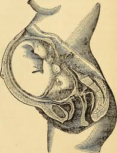

consonance
['kɔnsənəns]
consonant: a.调和的，一致的
ance(eins): n. 状态；性质；情况
nanc(): [医][=non-adrenergic,non-cholinergic]非肾上腺素能，非胆碱能
nance('nɑ:nsei): n. 女人气的男人, 搞同性关系的人
onan(): 油浸自冷（变压器冷却方式，Oil Natural Air Natural）
sonance('sәjnәns): n. 有声状态, 声音
crook
[kruk]
brook: n.小河
croak: n.蛙鸣声；v.发牢骚，抱怨
croon: v. 低声歌唱
brood: n.一窝幼鸟；v.孵蛋；冥想
coop: n.(鸡)笼，栏
Coup 政变
crack: n.爆裂声；裂缝；v.裂开；破解，破译
creek: n.小湾，小溪
cross: a.生气的
crown: v.加冕，使成王，居…之顶
droop: v.低垂；沮丧，萎靡
groom: n.马夫；新郎
rook(rʌk): n. (象棋)车, 骗子\nvt. 骗
deference
['defərəns]
defer([di'fə:]): v.推延；听从
defer(di'fә:): vi. 推迟, 延期, 听从\nvt. 使推迟, 使延期
ence(): 具...的行为,状态
fere(fɪə): n. 伴侣, 配偶
ferenc(): n. (Ferenc)人名；(德、匈、罗、塞、波、捷)费伦茨
ference(): [人名] 费尔伦斯
rence(rens): 盲目降落区的障碍物间隔
drollery
['drəuləri]
droll([drəul]): a.古怪的，好笑的
droll(drɒl): a. 好笑的, 滑稽的, 逗趣的
droller(): 离奇古怪的, 滑稽的（droll的比较级）
olle(): n. (Olle)人名；(法)奥莱；(挪、瑞典)奥勒；(西)奥列
oller(): [人名] 奥勒
roll(rәul): n. 卷, 滚动, 名单, 案卷, 压路机\nvi. 滚, 滚动, 飘流, 起伏, 卷, 绕\nvt. 使滚动, 卷, 绕
Rolle(): n. 罗尔（姓氏）
roller('rәulә): n. 滚筒, 滚轴, 压路机\n[化] 滚柱; 托辊
emollient
[i'mɔliənt]
emolument: n. 报酬，薪水
lien(['li(:)ən]): n.扣押权；留置权
emol('i:mɔl): 伊莫(皮肤润滑剂)
lien('li:әn): n. 留置权, 扣押权\n[医] 脾
moll(mɒl): n. 情妇, 妓女
molli(): n. (Molli)人名；(意)莫利
mollie('mɔli): n. 帆鳍鳉（等于mollienisia）
mollient('mɔliәnt): n. 软化剂, 缓和剂\nv. 使柔软
olli(): n. (Olli)人名；(芬、瑞典)奥利
Ollie('ɔli): 奥利(男子名, Oliver 的昵称)
flippant
['flipənt]
flip([flip]): v.用指轻弹；蹦跳；a.无礼的
pan([pæn]): v.严厉批评
flip(flip): vt. 掷, 弹, 轻击, 空翻\nvi. 用指轻弹, 抽打, 蹦跳\nn. 抛, 弹, 筋斗\na. 无礼的\n[计] 翻转
lipp(): [人名] 利普
lippa(): [医] 睑缘炎
pant(pænt): n. 喘息, 悸动\nvi. 喘息, 渴望\nvt. 气喘吁吁地说
ignominious
[ignə'miniəs]
IOUs(): suff. 有…性质的；属于…的；如…的
mini('mini): n. 同类中的极小者, 微型汽车, 超短裙\na. 微型的
nomi('nəʊmaɪ): [医][=nomifensine]氨苯甲异喹，8-氨基-4-苯基-2-甲基四氢异喹啉
impassive
[im'pæsiv]
impasse: n.僵局；死路
impulsive: a.易冲动的
massive: a.巨大的，厚重的
passive: a.被动的，缺乏活力的
imp([imp]): n.小鬼；顽童
passive(['pæsiv]): a.被动的，缺乏活力的
assi(): n. (Assi)人名；(法、意、阿拉伯、科特)阿西
Mpas(): (MPA 的复数) [化] 多光子吸收
pass(pæs): n. 经过, 要隘, 途径, 通行, 护照, 及格\nvt. 经过, 越过, 通过, 批准, 度过, 传递, 忽略\nvi. 经过, 变化, 流通, 及格, 宣判, 终止, 消逝, 被忽略, 不叫牌, 传递\n[计] 遍
passive('pæsiv): a. 消极的, 被动的, 冷漠的, 顺从的, 无源的\n[医] 被动的
mangle
['mæŋgl]
mantle: n.披风，斗篷；v.覆盖
mingle: v.混合
tangle: v.缠结；n.纷乱
dangle: v. 悬荡；吊胃口
wangle: v. 用巧计或花言巧语获得某事物
bungle: v.粗制滥造
gaggle: n.鹅群
handle: n.柄，把手；v.处理
manure: n.粪肥；v.给…施肥
maple: n.枫树(枫树是加拿大的国树)
marble: n.大理石
rankle: v.怨恨；激怒
gangly: adj. 身材瘦长的
haggle: v. 讨价还价
manacle: n. 手铐
mangy: adj. (兽)疥癣的；污秽的
spangle: n. (缝在衣服上的)金属片；v. 闪光
wrangle: v. 争吵，吵架
angle('æŋgl): n. 角, 角度, 角落\nvi. 钓鱼, 谋取, 博取, 斜向移动, 转变角度\nvt. 使转动角度, 在...钓鱼, 获取
mang(): n. 忙、盲等同音中文字；万、孟等同音粤语字
muzzy
['mʌzi]
murky: a.黑暗的；朦胧的
muddy: adj. 多泥的；浑浊的，不纯的
muggy: adj. (天气)闷热而潮湿的
musty: adj. 发霉的，有霉臭的
muzz(mʌz): vt. 使发呆, 使迟钝
precipitant
[pri'sipitənt]
precipitate: v.加速，促成；a.鲁莽的
tan([tæn]): v.鞣(革)
pita('pi:tə): n. （希腊和中东地区的）皮塔饼
preci(): [地名] [意大利] 普雷奇
presumption
[pri'zʌmpʃən]
resumption(ri'zʌmpʃәn): n. 取回, 恢复, 再开始\n[经] 再取回, 恢复, 重新占用
sump(sʌmp): n. 污水坑, 水坑, 机油箱\n[化] 污水槽
sumption('sʌmpʃәn): n. 大前提, 设想
tion(): n. 象征式互动；支票电托收
proffer
['prɔfə]
coffer: n. 保险柜
offer('ɒfә): n. 给予(物), 出价, 提议, 意图, 报价\nvt. 提供, 出价, 奉献, 试图, 使出现, 演出\nvi. 出现, 献祭, 提议, 求婚
Prof(prɒf): n. 教授
roff('rɒf): roff语言
roffe(): [人名] [英格兰人姓氏] 罗夫 Rolf的变体
rebuff
[ri'bʌf]
rebuke: v.指责，谴责
rebus: n.(以音、画等提示的)字谜，画谜
buff(bʌf): n. 暗黄色, 暗黄色皮革, 人的皮肤\nvt. 擦亮, 使柔软\na. 暗黄色的
suggestive
[sə'dʒestiv]
gest(dʒest): n. 诗体小说, 昌险行为
stive(staiv): 粉末, 粉尘
sugg(sʌ^): (船在搁浅时)随浪颠簸
suggest(sәg'dʒest): vt. 提议, 建议, 促成, 暗示, 启发, 使人想起\n[法] 建议, 提出, 提议
supple
['sʌpl]
ripple: v.起涟漪；n.细浪，涟漪
rumple: v.弄皱，弄乱
staple: n.主要产品
stipple: v.点画，点描
subtle: a.微妙的，精巧的
supine: a.仰卧的；懒散的
topple: v.倾覆，推倒
tipple: v. 酗酒；n. 烈酒
suppl('sʌpl): [医]供给，输送，电源
tack
[tæk]
hack: v.乱劈，乱砍；n.雇佣文人
pack: n.狼群；一群动物
tact: n.机智；圆滑
track: n.足迹，踪迹；轨道；小道；v.跟踪
sack: n. 粗布袋；v. 掠夺
balk: n.大方木料；v.妨碍；(因困难等)不愿前进或从事某事
bark: v./n.狗吠；n.树皮
bask: v.晒太阳，取暖
buck: v.反对；n.雄鹿；雄兔
crack: n.爆裂声；裂缝；v.裂开；破解，破译
hawk: n.隼，鹰
knack: n.特殊能力；窍门
lace: n.鞋带，系带；网眼花边，透孔织品
lank: a.瘦削的；长而软的
adj. (人)瘦弱的; (树等)细长的; (草等)稀疏的; (头发)平直的
lark: n./v.玩乐，嬉耍
mask: n.假面具；v.隐藏(感情)
mock: v.嘲笑；模仿地嘲弄
nick: n.小伤口，刻痕
oak: n.橡树
pact: n.协定，条约
peck: v.啄食；轻啄
quack: n.冒充内行之人；庸医
racy: a.活泼的，生动的
slack: a.懒散的，懈怠的；(绳)松弛的；v.松懈，怠惰
sock: v.重击，痛打
stalk: v.隐伏跟踪(猎物)
stark: a.(外表)僵硬的；完全的
stock: a.普通的，惯用的；n.存货
tacit: a.心照不宣的
tackle: v.处理；n.滑车
tag: n.鞋带；附属物，标签
tame: a.驯服的；沉闷的
tamp: v.捣实，砸实
tan: v.鞣(革)
tare: n.莠草，杂草
tart: a.酸的；尖酸的
taut: a.绷紧的
tract: n.传单；大片土地
tusk: n.(象)长牙
wick: n.蜡烛芯；灯芯
dank: adj. 阴湿的，阴冷的
dock: v. 剪短；扣除…的一部份工资
ruck: n. 皱褶；普通群众
shack: n. 简陋的小屋，棚屋
trek: v. 艰苦跋涉
tendentious
[ten'denʃəs]
sententious: adj. 好说教的；简要的
den([den]): n.兽穴，窝
dent([dent]): n.缺口，凹痕；v.弄凹
tend([tend]): v.照料，看顾
dent(dent): n. 凹痕\nvt. 使凹下, 削弱\nvi. 塌陷
ende(): [地名] [印度尼西亚] 英德
IOUs(): suff. 有…性质的；属于…的；如…的
tend(tend): vi. 走向, 有某种的倾向, 易于, 照顾, 注意\nvt. 照料, 护理
tende(): [地名] [法国] 唐德
acarpous
[ei'kɑ:pəs]
carp([kɑ:p]): n.鲤鱼；v.吹毛求疵
acar(): n. (Acar)人名；(土)阿贾尔；(阿拉伯、罗、法)阿卡尔
carp(kɑ:p): n. 鲤鱼\nvi. 吹毛求疵, 挑剔
addle
['ædl]
saddle: n.鞍，马鞍
waddle: v.(鸭子等)摇摇摆摆地走
adage: n.格言，古训
adobe: n.泥砖，土坯
adore: v.崇拜；热爱
agile: a.敏捷的，灵活的
amble: n./v.漫步，缓行
ample: a.富足的；充足的
axle: n.轮轴(连接两个车轮的轴)
coddle: v.溺爱；悉心照料
dawdle: v.闲荡，虚度
handle: n.柄，把手；v.处理
idle: a.(指人)无所事事的；无效的；v.懒散，无所事事
meddle: v.干涉，干预
puddle: n.水坑，洼
riddle: n.谜语
adduce: v. 给予(理由); 举出(例证)
cuddle: n./v. 搂抱，拥抱
huddle: v. 挤成一堆；n. 一堆人(杂物)
muddle: n. 混乱，迷惑
peddle: v. 兜售
sidle: v. (偷偷地)侧身而行
twaddle: n. 胡说八道，瞎扯
aureole
['ɔ:riəl]
aure(): [地名] [法国] 欧尔河; [地名] [挪威] 艾于勒
aureo(): n. (Aureo)人名；(葡)奥雷奥
auricular
[ɔ:'rikjulə]
auric('ɒ:rik): a. 金的\n[医] 金的
auricula(ә'rikjulә): n. [植]耳状报春花,[动]耳螺属软体动物
uric('juәrik): a. 尿的, 取自尿中的\n[医] 尿的
auspices
['ɔ:spisiz]
auspice: n. 预兆，吉兆；赞助，支持
auspice(['ɔ:spis]): n. 预兆，吉兆；赞助，支持
auspice('ɒ:spis): n. 吉兆, 占卜, 赞助
ices(aisiz): n. 冰( ice的名词复数 ); 冰块; 冰场; 冰冻甜食\nv. （使）结冰( ice的第三人称单数 )
pice(pais): n. 印度铜币；派士
spic(spik): n. 内插法测船位计算机；美籍西班牙人；在美国讲西班牙语的人
spice(spais): n. 香料, 药料, 香气, 调味品, 情趣, 少许\nvt. 加香料, 使添趣味
spices(): n. 香味料, 调味料（spice的复数）
awning
['ɔ:niŋ]
swing: v.摇摆；旋转；n.秋千
ning(): n. 宁（汉语拼音）
baffle
['bæfl]
raffle: n.(尤指为公益事业举办的)抽奖售物(活动)
waffle: n.蛋奶烘饼；v.胡扯，唠叨
babble: v.胡言乱语；牙牙学语；喋喋不休
bale: n.大包裹；灾祸，不幸
gaffe: n.(社交上令人不快的)失言，失态
muffle: v.使声音降低；裹住
ruffle: v.弄皱；激怒；n.皱边(装饰衣服)
bauble: n. 花哨的小玩意儿；没价值的东西
riffle: n. 涟漪
baff(bæf): vi. (高尔夫球)以球杆打球下部使之高飞\nn. 高飞球的一击
beckon
['bekən]
reckon: v. 推断，估计；猜想，设想
beacon: n.烽火；灯塔
beck(bek): n. 点头示意, 招手, 小河
bedlam
['bedləm]
beam: n.(房屋等)大梁；光线
beseech
[bi'si:tʃ]

betroth
[bi'trəu0]
roth(): n. 罗斯（姓氏）
trot(trɒt): n. 快步\nvi. 快步走, 小跑\nvt. 使小跑, 策马小跑
troth(trәuθ): n. 忠诚, 真实, 诚实, 诺言\nvt. 约定, 订婚
blare
[bleə]
bare: v.暴露；a.赤裸的
blade: n.刀锋，刀口
flare: n./v.(火焰)摇曳，闪耀
glare: v.发出眩目光芒；怒目而视
blase: adj. 厌倦享乐的，冷漠的
bale: n.大包裹；灾祸，不幸
bane: n.祸根
bar: v.禁止，阻挡；n.条，棒
barb: n.(鱼钩的)倒钩；严厉的批评
bard: n.吟游诗人
barge: n.平底货船，驳船
bark: v./n.狗吠；n.树皮
barn: 
base: a.卑鄙的
bland: a.(人)情绪平稳的；(食物)无味的
blast: >n.一阵(大风)；冲击波；v.爆破；枯萎
blue: a.忧伤的，沮丧的
blur: n.模糊不清的事物；v.使…模糊
blurb: n.简介；印在书籍封套上的推荐广告
blurt: v.脱口而出
bore: v.钻孔；使厌烦；n.孔；令人厌烦的人
brace: v.使稳固，架稳；n.支撑物
brake: n.刹车；v.减速，阻止
glade: n.林中的空地
glaze: v.装玻璃于；上釉彩；n.釉
lace: n.鞋带，系带；网眼花边，透孔织品
lark: n./v.玩乐，嬉耍
lave: v.洗浴；慢慢冲刷
mare: n.母马，母驴
pare: v.削；修剪；削减，缩减
plane: n.铇子；平面；v.刨
slake: v.解渴，消渴
slate: n.石板；候选人名单；v.提名
snare: n.罗网，陷阱
tare: n.莠草，杂草
lore: n. 知识；传说
lure: n. 诱惑力；v. 引诱
scare: n./v. 惊吓，受惊，威吓
lare(): n. 拉尔（女子名）
bounteous
['bauntiəs]
boun(bu:n): [古]准备
cactus
['kæktəs]
caucus: n.政党高层会议
callus: n. 老茧，胼胝
actus(): [法] 诉讼, 行为, 法案
calamity
[kə'læmiti]
clarity: n.清楚
amity(['æməti]): n.(人或国之间的)友好关系
alam(): n. 阿拉姆（姓氏）
alami(): n. (Alami)人名；(阿拉伯、以、法、西、芬)阿拉米
amit(): n. 阿米特（男子名）
amity('æmiti): n. 友好, 亲善关系
cala('kælә): n. 熏腌猪肩下肉
calami('kæləmai): n. 省藤属植物, 菖蒲, 羽根( calamus的名词复数 )
mity('maiti): a. 多螨的
calipers
['kælipəz]
caliper('kælipә): n. 测径规, 卡钳\nvt. 用测径规测量

calumniate
[kə'lʌmnieit]
alum('ælәm): n. 明矾, 矾, 校友\n[化] 明矾; 钾铝明矾
alumni(ә'lʌmni): pl. 男毕业生, 男校友
iate(): 伊利诺伊州英语教师协会(Illinois Association of Teachers of English)\n国际戒酒教育协会(International Association for Temperance Education)
canard
[kæ'nɑ:d]
canary: n.金丝雀；女歌星
candid: a.率直的
coward: n.胆小鬼
hazard: n.危险
anar(): n. (Anar)人名；(土、阿塞、土库)阿纳尔
cana('keinә): n. 迦南（巴勒斯坦北部的一个村庄）
nard(nɑ:d): n. 甘松, 甘松油膏\n[医] 甘松香, 甘松
capacious
[kə'peiʃəs]
rapacious: a.强夺的，贪婪的
capricious: a.变化无常的，任性的
captious: a.吹毛求疵的
sagacious: a.聪明的，睿智的
spacious: adj. 广阔的，宽敞的
capa(): n. 斗牛士的红色斗篷
IOUs(): suff. 有…性质的；属于…的；如…的
capsize
[kæp'saiz]
caprice: n.奇思怪想，变化无常，任性
capsule: n.荚；胶囊
size(saiz): n. 大小, 尺寸, 规模, 尺码, 能力, 浆料\nvt. 上浆, 依大小排列\nvi. 可比拟\na. 一定大小的, 一定尺寸的
carapace
['kærəpeis]
apace(ә'peis): adv. 快速地, 急速地
arap(): n. (Arap)人名；(葡、塞、肯)阿拉普
cara(): n. 卡拉（女性人名）
pace(peis): n. 速度, 步调, 步法\nvi. 踱步, 缓慢走\nvt. 用步测, 踱步于
Rapa(): n. (Rapa)人名；(意、塞)拉帕

catharsis
[kæ'θɑ:sis]
arsis('ɑ:sis): n. 强音节, 弱拍
athar(): n. (Athar)人名；(巴基)阿塔尔
Cath(): [医] 泻药, 泻剂
catha(): [医]卡他属：植物的一属
Cathar('kæθә(r)): n. [宗] 清洁派教徒,卡特里派教徒
Cathars(): (Cathar 的复数) n.[宗] 清洁派教徒,卡特里派教徒
hars(): n. 神秘圣地；暗器商店
thar(ta:(r); ta:(r), tə:(r)): n. 塔尔（沙漠名, 位于南亚）
tharsis('θɑ:sis): [地名] [西班牙] 塔尔西斯
chalice
['tʃælis]
choice: a.上等的；精选的
malice: n. 恶意, 怨恨
halic('hælik): 盐土植物
lice(lais): n. 虱, 寄生虫, 小虫, (非正式)低贱的人, 不受欢迎的人, 卑鄙的人\n[医] 虱
cloister
['klɔistə]
cluster: n.串，束，群；v.成群，成串
loiter: v. 游荡；徘徊
roister: v. 喝酒喧哗
ister(): n. 伊斯忒耳（希腊神话中的神）
lois('lәuis): n. 洛伊斯（女子名）
ster(): n. 灭菌, 绝育；消毒器, 杀菌器
commensurate
[kə'menʃərit]
incommensurate: a.不成比例的，不相称的
comme(): vt. （法）好像；（法）如同
mens(menz): [医] 精神, 意志
mensurate('mensjuәreit): vt. 测定, 测量
rate(reit): n. 比率, 率, 速度, 价格, 费用, 等级\nvt. 估价, 认为, 鉴定等级, 责骂\nvi. 被评价, 责骂
sura('suәrә): [医] 腓肠, 小腿肚
surat(su'ræt): n. 印度苏拉特产的劣质棉布,苏拉特(印度西部港市)
urate('jjәreit): n. [化]尿酸盐
compendium
[kəm'pendiəm]
pen([pen]): n.围栏；监禁；母天鹅
comp(kɔmp): [计] 电脑及相关知识; DOS内部命令:比较两个文件的内容
compend('kɔmpend): n. (=compendium)手册概要, 概略
pend(pend): vi. 悬而未决, 待定
conifer
['kəunifə]
confer: v.讨论，商谈；赠予
conquer: v.以武力征服
coffer: n. 保险柜
coni(): [医] 圆锥; 锥体; 球果
nife(naiv): 镍铁(合金磁心)
conjecture
[kən'dʒektʃə]
conj(): (缩)连接词
ject(): n. 国民住宅（等于project,常出现于黑人的口语和说唱乐中）
ture(): 油温测量装置；介观结构
consensus
[kən'sensəs]
onsen('ɒnsen): n. 温泉，词源源于日本语
sensu('sensju): [日]扇子, 日本的绘画摺扇
sensus('sensәs): [医] 感觉, 觉
conspicuous
[kən'spikjuəs]
nspi(): [体]全国游泳池研究所
picu(): [医][=pediatric intensive care unit]儿科监护病房，儿科加强监护病房
spic(spik): n. 内插法测船位计算机；美籍西班牙人；在美国讲西班牙语的人
consummate
[kən'sʌmit；'kɑnsəmet]
mate([meit]): n.伙伴；配偶；v.交配
mate(meit): n. 配偶, 对手, 助手, (象棋)将死\nvt. 使配对, 使一致, 结伴, (象棋)将死\nvi. 成配偶, 紧密配合
summa('sumә): n. 总结, 总结性论文
summat(ˈsʌmət): pron. <英><方>某事, 某物, 某东西
summate('sʌmeit): v. [数]求(…的)和
umma(): [地名] [伊拉克] 乌玛
contumacious
[`kɔntju:'meiʃəs]
IOUs(): suff. 有…性质的；属于…的；如…的
tuma(): [地名] [俄罗斯] 图马
coruscate
['kɔrəskeit]
cate(keit): n. 佳肴, 美食
corus(): 科勒斯钢铁公司
scat(skæt): interj. 嘘, 快走\nvi. 用拟声唱法唱\nn. (模仿乐器的)拟声唱法
usca(): [法]美国上诉法院
cosset
['kɔsit]
asset: n.财产；可取之处
closet: n.壁橱；a.秘密的
consent: v.同意，允许
covet: v.贪求，妄想
fosse: n.护城河
onset: n.(坏情况)开始发作
posse: n.武装团队
cornet: n. 短号；圆锥形蛋卷
osse(): [地名] [法国] 奥斯河
Osset('ɔsit, -et): n. (主要居住在高加索奥塞梯地区的)奥塞梯人
countenance
['kauntinəns]
ance(eins): n. 状态；性质；情况
count(kaunt): vt. 计算, 视为\nvi. 计数\nn. 计算, 合计, 计数, 伯爵\n[计] 计数
enance(): n. 忏悔
nanc(): [医][=non-adrenergic,non-cholinergic]非肾上腺素能，非胆碱能
nance('nɑ:nsei): n. 女人气的男人, 搞同性关系的人
tena(): [地名] [厄瓜多尔、哥伦比亚] 特纳
crockery
['krɔkəri]
trickery: n. 欺骗，诡计
croc(krɔk): n. <口>=crocodile
crock(krɒk): n. 壶, 罐, 碎瓦片\nvt. 使受伤, 弄衰弱\nvi. 摩擦脱色, 衰竭
Crocker(): n. (Crocker)人名；(英、葡)克罗克
kery(): [人名] 克里，克丽（女名）
Ocker('ɔkә(r)): <澳俚> n.无教养的澳大利亚人,粗鲁的澳大利亚人
rock(rɒk): n. 岩石, 岩礁, 石头, 基石, 暗礁, 摇动, 摇滚乐\nvt. 摇摆, 摇动, 使摇晃, 使动摇\nvi. 摇, 摇动
rocke(): n. (Rocke)人名；(英、德)罗克
rocker('rɒkә): n. 摇的人, 摇杆\n[电] 摇杆
rockery('rɒkәri): n. 假山
curator
[kjuə'reitə]
crater: n.火山口；弹坑
ator(): 实际接收时间（Actual Time Of Reception）
cura(): [法]监督
rato('reitәj): n. 火箭辅助起飞
rator('reitә): n. 分段线性函数发生器
dalliance
['dæliəns]
alli(): n. 阿莱（一种减肥药）
allia(): n. (Allia)人名；(意)阿利亚
alliance(ә'laiәns): n. 联盟, 联合\n[法] 同盟, 联盟, 联姻
ance(eins): n. 状态；性质；情况
dall(dɔ:l): n. [动]野大白羊（产于北美西北部山区）；达尔（男子名）
dalli(): [地名] [尼日利亚] 达利
lian(): n. 莲中华料理（店名）
daub
[dɔ:b]
barb: n.(鱼钩的)倒钩；严厉的批评
cub: n.幼兽；年轻无经验的人
daft: a.傻的
damp: v.减弱，制止振动；a.潮湿的
dart: n.飞镖；v.急驰；投射
daunt: v.使胆怯，使畏缩
dour: a.严厉的，脸色阴沉的
drab: a.枯黄色的；无聊的
hub: n.轴心；中心
jamb: n.门窗的侧柱
laud: v.称赞
maul: v.撕裂皮肉，伤害
snub: v.冷落，不理睬
taut: a.绷紧的
damn: v. 严厉地批评，谴责；adj. 该死的
dank: adj. 阴湿的，阴冷的
daze: v. 使茫然，使眩晕
gab: n. 饶舌，爱说话；v. 空谈，瞎扯；闲逛，游荡
debouch
[di'bautʃ]
retouch: v.修描；润色
bouch(): [人名] [英格兰人姓氏] 鲍奇 Budge的变体
debo(): [人名] 迪博
ouch(autʃ): interj. 哎唷(表剧痛)\nn. 扣环, 胸针, 珠宝饰物
deign
[dein]
feign: v.假装，伪装
reign: n.统治时期；王朝；领域
align: v.将某物排列在一条直线上；与某人结盟
benign: a.慈祥的
deify: v.奉为神；崇拜
den: n.兽穴，窝
din: n.喧闹声，嘈杂声
rein: n.缰绳；v.控制
demagogue
['deməgɔg]
pedagogue: n.教师，教育者
agog([ə'gɔg]): a.兴奋的，有强烈兴趣的
agog(ә'gɒg): a. 兴奋着的, 急切的\nadv. 急切地, 渴望
demagog('demә^ɔ^): n. 煽动者, 蛊惑人心的政客\n[法] 煽动者, 蛊惑人心者, 煽动政治家
mago(): [地名] [俄罗斯] 马戈
magog('meiɡɔɡ): [人名] 梅戈格; [地名] [加拿大] 梅戈格
demure
[di'mjuə]
demur: v.表示异议，反对
deduce: v.演绎，推断
defuse: v.从(爆破装置)中卸除引信；缓和紧张状态或危急局面
delude: v.欺骗，哄骗
deluge: n.大洪水；暴雨
demise: n.死亡；财产转让
demote: v.降级，降职
denture: n.假牙
denude: v.脱去；剥蚀；剥夺
immure: v.监禁
secure: a.安全的；稳固的；v.固定；使安全
tenure: n.任期；终身职位
depute: v. 派…为代表或代理
demur([di'mə:]): v.表示异议，反对
demur(di'mә:): vi. 提出异议, 反对, 抗辩\nn. 异议, 反对
mure(mjuә): vt. 用墙壁围绕, 禁闭, 幽禁
desperado
[`despə'rɑ:dəu]
desperate: a.不顾死活的，拼命的
desp(): [医][=decaspiride]苯螺旋酮，螺葵酮
espe(): [医][=European Society for Paediatric Endocrinology]欧洲儿科内分泌学会
esper(): n. 埃斯珀（姓氏）；灵异少女
espera(): [地名] [西班牙] 埃斯佩拉
pera(): n. 啤梨
rado(): n. 雷达手表（产自瑞士）
desultory
['desəltəri]
sult(): n. 饥饿（丹麦电影名）
Tory('tɒ:ri): n. 托利党党员, 保守党员, 亲英分子\na. 保守分子的
ultor('ʌltɔ:): 阳极, 最后[最高, 第二]阳极, 最高压级(指阴极射线管内的阳极)
diffident
['difidənt]
dissident: n.唱反调者
den([den]): n.兽穴，窝
dent([dent]): n.缺口，凹痕；v.弄凹
dent(dent): n. 凹痕\nvt. 使凹下, 削弱\nvi. 塌陷
fide('fide): [体]国际棋联
ident(ai'dent): n. 识别, 鉴别
dipsomania
[`dipsəu'meiniə]
mania(['meiniə]): n.癫狂；狂热
ania(): n. (Ania)人名；(法、意、西、芬、阿拉伯)阿尼娅 (女名), 阿尼亚\n自动比浊免疫测定法(automated nephelometric immunoassay)
dipso('dipsәj): <俚>酒鬼,酗酒狂
mani('mɑ:ni): n. 落花生；嘛呢堆（用石块垒成的方形或圆台形石堆）
mania('meiniә): n. 狂躁, 热衷, 狂热\n[医] 躁狂, 狂
Oman(әu'mɑ:n): n. 阿曼
Omani(-ni:): a. 阿曼的
soma('sәumә): n. 身体, 肉体, 身体细胞\n[医] 体, 躯体
Soman('sәjmæn): n. [亦作s-][化]索曼,甲氟磷酸异已酯(一种胆硷酯酶抑制剂)
disaffect
[`disə'fekt]
disinfect: v.杀菌，消毒
affect(ә'fekt): vt. 影响, 感动, 假装, 模仿, 爱好, 倾向于\nn. 自觉感情
fect(): 电场效应
discretion
[dis'kreʃən]
cret(): [医][=Committee on Residency Education and Training]住院医师教育与训练委员会
disc(disk): n. 圆盘, 唱片\nvt. 灌唱片
tion(): n. 象征式互动；支票电托收
dissect
[di'sekt]
dissent: v.不同意，持异议
dialect: n.方言
sect([sekt]): n. (宗教等)派系
Diss(dis): 迪丝草纤维
disse(): [医]Disse腔
sect(sekt): n. 宗派, 教派
dissident
['disidənt]
diffident: a.缺乏自信的
dissent: v.不同意，持异议
den([den]): n.兽穴，窝
dent([dent]): n.缺口，凹痕；v.弄凹
dent(dent): n. 凹痕\nvt. 使凹下, 削弱\nvi. 塌陷
Diss(dis): 迪丝草纤维
ident(ai'dent): n. 识别, 鉴别
side(said): n. 旁边, 侧, 方面, 胁, 侧边, 血统\na. 旁的, 侧的, 次要的\nvt. 同意, 支持\nvi. 支持, 赞助
ssid(): Service Set Identifier（服务集标识符），也称为网络名称。一种独一无二的标识符，作为无线设备连接到WLAN时的密码。
divagate
['daivəgeit]
diva(['di:və]): n.歌剧中的首席女主角
agate('ægәt): n. 玛瑙, 五又二分之一点铅字\n[化] 玛瑙149
diva('di:vә): n. 歌剧女主角/首席女主角, 主要女歌手
gate(geit): n. 门, 牌楼, 大门, 通道, 闸\nvt. 装门于\n[计] 门; 栅
eddy
['edi]
edify: v.陶冶，启发
espy: v.(从远处等)突然看到
giddy: a.轻浮的，不严肃的
needy: a.贫穷的
odds: n.机会，可能性
ready: a.机敏的，迅速的
tidy: a.整齐的，整洁的
muddy: adj. 多泥的；浑浊的，不纯的
reedy: adj. 长满芦苇的；(声音)高而尖的
ruddy: adj. (脸色)红润的，红色的

efficacious
[`efi'keiʃəs]
effi(): 时尚工业教育基金会(Educational Foundation for the Fashion Industries )\n电子光纤细度指示器(Electronic Fiber Fineness Indicator )
icac(): 廉政公署
IOUs(): suff. 有…性质的；属于…的；如…的
effulgent
[i'fʌldʒənt]
refulgent: a.辉煌的，灿烂的
effulge(i'fʌldʒ): v. 闪闪发亮, 照耀
fulgent('fʌldʒәnt): a. 光辉的, 灿烂的
gent(dʒent): n. 绅士
emphatic
[im'fætik]
phat(fæt): a. （因稿件空白行多而）容易排字的；（俚）酷毙了, 太好了
phatic('fætik): a. 交流感情的, 仅仅是交际性的
eschew
[is'tʃu:]
screw: n.螺丝钉，螺旋；吝啬鬼
hew([hju:]): v.砍伐；遵守
chew(tʃu:): vt. 咀嚼, 嚼碎\nvi. 咀嚼, 细想\nn. 咀嚼, 咀嚼物
esch(): [医][=electrolyte steroid-produced cardiopathy(characterized by)hyalinization]电解质、类固醇引起以玻璃样变为特征的心脏病
esche(): [地名] [德国] 埃舍
exigent
['eksidʒənt]
eminent: a.著名的，显著的
gent(dʒent): n. 绅士
exonerate
[ig'zɔnəreit]
exon(): [化] 外显子
exoner('eksən): n. [英国英语]英王仪仗卫士(4名)队长 [亦作 exempt]
nerat(): [医]卡比马唑，甲亢平，新唛苄唑[甲亢治疗药]
oner('wʌnә): n. 无比的人, 极佳的事情
rate(reit): n. 比率, 率, 速度, 价格, 费用, 等级\nvt. 估价, 认为, 鉴定等级, 责骂\nvi. 被评价, 责骂
explicate
['eksplikeit]
expiate: v.赎罪，补偿
explicit: a.清楚明确的
extricate: v.拯救，救出
implicate: v.牵连(于罪行中)
explicable: adj. 可解释的
cate(keit): n. 佳肴, 美食
plica('plaikә): n. 襞, 褶\n[医] [皱]襞, 褶
plicate('plaikit): a. 折成扇状,有褶的,有皱襞的
expository
[iks'pɔzi`təri]
repository: n. 贮藏室，仓库
posit(['pɔzit]): v.断定，认为
expo('ekspәu): [经] 展览会, 市集, 义卖
expos(): (expo 的复数) [经] 展览会, 市集, 义卖
exposit(ik'spɔzit): vt.揭示,显示, 说明,解释,阐述
expositor(ik'spɒzitә): n. 说明者, 解释者
Posi(): n. (Posi)人名；(意、巴布)波西
posit('pɒzit): vt. 假设, 安置, 布置
positor(): [医] 复位器
Tory('tɒ:ri): n. 托利党党员, 保守党员, 亲英分子\na. 保守分子的
expostulate
[iks'pɔstjuleit]
postulate: v.假定；要求
postulate(['pɔstjuleit]): v.假定；要求
expo('ekspәu): [经] 展览会, 市集, 义卖
expos(): (expo 的复数) [经] 展览会, 市集, 义卖
late(leit): a. 迟的, 晚的, 已故的\nadv. 很晚, 很迟, 晚
post(pәust): n. 柱, 杆, 准星, 邮件, 邮政, 标竿, 职位, 岗位, 哨所, 兵营\nvt. 张帖, 邮递, 公布, 登入帐, 使熟悉, 布置\nvi. 快速行进\nadv. 急速地\n[计] 记入; 登记, 上电自检
postulate('pɒstjuleit): n. 假定, 基本条件\nvt. 要求, 假定
tula('tu:lə; -lɑ:): n. 图拉（苏联西部城市）
expunge
[eks'pʌndʒ]
pun([pʌn]): n.双关语
pung(pʌŋ): n. 箱型雪橇
punge('pʌndʒi): n. 尖竹钉(尖部涂有毒药的狩猎或防御武器)
extant
[eks'tænt]
sextant: n.六分仪(航海定向仪器)
exact: a.精确的；v.强求，强索付款
exalt: v.(高度)赞扬，歌颂
expand: v.扩大，膨胀
extend: v.延展，延长
extinct: a.绝种的，不存在的
extort: v.强索，敲诈
extract: v.拔出；强索
exultant: adj. 非常高兴的，欢跃的
tan([tæn]): v.鞣(革)
extraneous
[eks'treinjəs]
extra('ekstrә): n. 额外的事物, 另外的收费\na. 额外的, 特别的\nadv. 额外地, 特别地, 非常地
rane(): n. 美国莱恩（公司）\nn. (Rane)人名；(芬、塞、瑞典)拉内
Tran(): n. (Tran)人名；(柬)德兰
trane(): n. 美国特灵公司
xtra('ekstrә): n. [电讯]字母X
exult
[ig'zʌlt]
exalt: v.(高度)赞扬，歌颂
cult: n.宗派；崇拜
erupt: v.爆发；喷出(熔岩、水、气体、泥浆等)
exact: a.精确的；v.强求，强索付款
exert: v.运用(力量等)
exude: v.使慢慢流出；四溢
fault: n.错误；(地质学)断层
vault: n.拱顶；地窖
facetious
[fə'si:ʃəs]
fractious: a.(脾气)易怒的，好争吵的
factitious: adj. 人为的，不真实的
facet(['fæsit]): n.(宝石等的)小平面；侧面
acet(ә'set): [化] 次乙基; 乙酰
aceti(): 阿切蒂（人名）
face(feis): n. 脸, 面容, 正面, 外观\nvt. 面对, 朝, 正视, 面临\nvi. 朝, 向\n[计] 现场可改变的控制元件
facet('fæsit): n. (多面体的)面, 方面, 琢面\n[医] 小平面, 小面
IOUs(): suff. 有…性质的；属于…的；如…的
facile
['fæsail]
agile: a.敏捷的，灵活的
docile: a.驯服的，听话的
facade: n. 建筑物的正面；(虚伪)外表
famine: n.饥荒
fickle: a.(爱情或友谊上)易变的，不坚定的
file: n.锉刀；v.锉平
fragile: a.易碎的，易坏的
futile: a.无效的，无用的;（人）没出息的；琐细的
labile: a.不稳定的
tackle: v.处理；n.滑车
tactile: a.有触觉的
factotum
[fæk'təutəm]
acto(): n. 雅图（投影机品牌）
fact(fækt): n. 事实, 真实性, 真相, 细节, 论据
facto(): [法] 实际上, 事实上
fatuous
['fætjuəs]
vacuous: a.发呆的，愚笨的
fabulous: adj. 难以置信的；寓言里的
fencing
['fensi6]
pending: a.即将发生的；未决的
cing(): n. 一种数据类型转换函数（用于计算机编程）
filly
['fili]
folly: n.愚蠢；愚蠢的行为，思想或做法
bully: v.以强欺弱，威胁；n.欺负别人者
dally: v.闲荡，嬉戏
fell: n.兽皮；v.砍伐；a.兇猛的，可怕的
file: n.锉刀；v.锉平
filth: n.肮脏；粗语
gully: n.雨水冲成的沟壑
mill: n.磨坊；压榨机；制造厂
rally: v.召集，集会；n.召集；集会
sill: n.门槛；窗台
tally: v.(使)一致，符合
wily: a.狡猾的
filch: v. 偷(不贵重的东西)
fillet: n. 束发带；鱼肉片
flay: v. 剥皮；诈取；严厉指责
jolly: adj. 欢乐的，快乐的
sully: v. 玷污，污染
fill(fil): vt. 装满, 填充, 弥漫, 供给, 满足, 供应\nvi. 充满, 变得沉重\nn. 满足, 装满, 充分, 填方\nvt. 填充\nvi. 填充\n[计] 填充
illy('ili): adv. 不完美地；困难的；不善地, 坏地
florid
['flɔrid]
flora: n.(某地区或时代的)植物群
forbid: v.不许，禁止；妨碍，阻止
ford: n.浅滩，水浅可涉处；v.涉水
lurid: a.耀眼的；骇人听闻的
flor(flɔ): n. 浮在葡萄酒表面的一种白色酵母
lori(): n. 洛里, 罗莉（人名）
flout
[flaut]
clout: n. 敲打，轻叩；影响力，权势
vt. 敲击，掌击
vt. 敲击，掌击
lout: n. 粗人
aloft: adv.在空中，在头顶上
bout: n.一回合，一阵
clot: n.凝块；v.使凝结成块
flaunt: v.炫耀；张扬
flint: n.打火石，燧石
flirt: v.挑逗，调戏
flit: v.掠过，迅速飞过
flock: n.羊群；鸟群
flora: n.(某地区或时代的)植物群
flux: n.不断的变动，动荡不定
foul: a.恶臭的；邪恶的；v.弄脏；n.(体育等)犯规
gloat: v.幸灾乐祸地看，窃喜
glut: v./n.过多；供过于求
lot: n.签；命运；v.抽签，划分
plot: n.情节；阴谋；策划
pout: v.噘嘴，板脸
slot: n.狭孔
stout: a.肥胖的；强壮的
tout: v.招徕顾客；极力赞扬
fleet: adj. 快速的；v. 消磨，疾驰；飞逝，掠过
fort: n. 要塞，城堡
loft: n. 阁楼，顶楼

rout: n. 大败，溃败
spout: v. 喷出；滔滔不绝地讲
lout([laut]): n. 粗人
flou(f'lu:): [医]枸橼酸胺丙？二唑
lout(laut): n. 蠢人\nvt. 愚弄\nvi. 屈服
foppish
['fɔpiʃ]
fop([fɔp]): n. (喜好精致服装的)花花公子
pish(piʃ): interj. (表示轻蔑、不耐烦、嫌恶)呸, 啐\nv. 说一声"呸"
foster
['fɔstə]
fester: v.(指伤口)溃烂，化脓
poster: n.海报，招贴画
roster: n.值班表，花名册
bolster: n.枕垫；v.支持，鼓励
falter: v.摇晃，蹒跚；支吾地说
fasten: v.使…固定(to fix sth. firmly)
fetter: n./v.(带)脚镣；束缚
filter: n.滤纸；v.过滤
folder: n.文件夹，纸夹
forger: n.伪造者；打铁匠
forte: n.长处，擅长；a.(音乐)强音的
fosse: n.护城河
foyer: n.门厅，休息室
holster: n.手枪皮套
muster: v.召集，聚集
otter: n.水獭
pester: v.纠缠，强求
totter: v.摇摇欲坠；步履蹒跚
fodder: n. 草料
loiter: v. 游荡；徘徊
roister: v. 喝酒喧哗
oster(): [人名] 奥斯特; [地名] [俄罗斯] 奥斯捷尔; [地名] [俄罗斯·白俄罗斯] 奥斯捷尔河; [地名] [乌克兰] 奥斯泰尔
ster(): n. 灭菌, 绝育；消毒器, 杀菌器
gall
[gɔ:l]
pall: v.令人发腻，失去吸引力
gale: n. 狂风
gull: n. 海鸥；易上当的人；v. 欺骗
ail: v.生病
awl: n.(钻皮革的)尖钻
bail: n.保释金
bale: n.大包裹；灾祸，不幸
balk: n.大方木料；v.妨碍；(因困难等)不愿前进或从事某事
balm: n.香油，药膏；镇痛剂
dally: v.闲荡，嬉戏
dull: a.不鲜明的；迟钝的；v.变迟钝
fell: n.兽皮；v.砍伐；a.兇猛的，可怕的
gait: n.步法，步态
galley: n.船上的厨房
gallon: n.加仑
gape: v.裂开；目瞪口呆地凝视
gash: n.深长的伤口，裂缝
gavel: n.(法官所用的)槌，小木槌
gaze: v./n.凝视，注视
gild: v.镀金；虚饰
grill: v.烤；拷问；n.烤架
gully: n.雨水冲成的沟壑
gulp: v.吞食，咽下
hail: n.冰雹；v.致敬
hale: a.健壮的，矍铄的
halo: n.(日、月等)晕，神像之光环
hull: n.外壳；荚；船身；v.剥去外壳
loll: v.懒洋洋地坐或卧
lull: n.活动的暂停；v.使平静
maul: v.撕裂皮肉，伤害
mill: n.磨坊；压榨机；制造厂
poll: n.民意测验；选举投票
rail: n.栏杆；铁轨；v.咒骂，猛烈指责
rally: v.召集，集会；n.召集；集会
sill: n.门槛；窗台
stall: v.使停止，使延迟
tally: v.(使)一致，符合
toll: n.过路(桥)费；伤亡人数，损失；v.(缓慢而有规律地)敲
bawl: v. 大叫，大喊
gab: n. 饶舌，爱说话；v. 空谈，瞎扯；闲逛，游荡
gallop: v./n. (马)飞奔；疾驰
wail: v. 哀号，痛哭
genial
[dʒi'naiəl]
venial: a.(错误等)轻微的，可原谅的
menial: adj. 仆人的，卑微的；n. 家仆
aerial: a.空中的，空气中的
serial: a.连续的，一系列的
venal: a.惟利是图的，贪赃枉法的
genia(): [医]配基
Nial('naiәl): 尼尔镍铝铁永磁合金
gestate
['dʒesteit]
gesture: n.姿势，手势，姿态
instate: v.任命，安置
estate(i'steit): n. 不动产, (人生的)阶段, 阶层, 财产\n[经] 房地产, 遗产, 财产
gest(dʒest): n. 诗体小说, 昌险行为
stat(stæt): [电] 静
state(steit): n. 州, 状态, 情形, 国家, 政府, 领土, 国务, 社会地位\na. 国家的, 正式的, 礼仪用的, 州的\nvt. 说明, 陈述, 规定\n[计] 状态
tate(teit): n. 塔特（姓氏）

gild
[gild]
agile: a.敏捷的，灵活的
ail: v.生病
bid: v.命令；出价，投标
bile: n.胆汁
bilk: v.躲债；骗取
file: n.锉刀；v.锉平
fold: n.羊栏，畜栏；v.折叠
gall: n.胆汁；怨恨
gibe: n./v.嘲弄，讥笑
giddy: a.轻浮的，不严肃的
gist: n.要点，要旨
goad: n.赶牛棒；v./n.刺激，激励
grill: v.烤；拷问；n.烤架
grind: n.枯燥乏味的工作；v.磨碎，碾碎
guile: n.欺诈，狡猾
guilt: n.罪行；内疚
gulp: v.吞食，咽下
hold: n.(船)货舱
meld: v.(使)混合，(使)合并
milk: v.榨取
mill: n.磨坊；压榨机；制造厂
mold: n.模子；(美)霉；v.塑造
nil: n.无，零
pied: a.杂色的
rile: v.使…恼火，激怒
rind: n.(西瓜等)外皮
sill: n.门槛；窗台
silt: n.淤泥，淤沙
tilt: v.(使)倾斜；n.倾斜，斜坡
vile: a.恶劣的，卑鄙的
weld: v.銲接，熔接；结合
wield: v.支配，掌权
wilt: v.使…凋谢，枯萎
wily: a.狡猾的
gale: n. 狂风
gull: n. 海鸥；易上当的人；v. 欺骗
hilt: n. (剑或刀之)柄
wile: n. 诡计，花言巧语
grasping
['grɑ:spiŋ]
grating: a.(声音)刺耳的；恼人的
gripping: a.紧紧抓住注意力的
spin([spin]): v.旋转；纺，纺纱；n.旋转
rasp([ra:sp]): v. 发出刺耳的声音
aspin(): [人名] 阿斯平
grasp(græsp): n. 把握, 抓紧, 理解, 抓, 柄, 控制\nvt. 抓住, 紧握, 领会\nvi. 抓
ping(piŋ): n. 砰(子弹击中时的声音), 报时的最后一声, 声脉冲\nvi. 砰(铛)地发声\n[计] internet网络包测程序, 连通性检测命令
rasp(ræsp): n. 粗锉刀, 刺耳声\nvt. 用粗锉刀锉, 粗声粗气地说\nvi. 粗锉, 锉磨, 发刺耳声
rasping('ræspiŋ): a. 锉磨声的, 令人焦躁的
spin(spin): n. 旋转, 自旋, 疾驰, 情绪低落\nvt. 纺织, 纺, 使旋转, 编造\nvi. 纺纱, 吐丝, 作茧, 结网, 旋转, 自旋, 疾驰
gripe
[graip]
grope: v.摸索，探索
bribe: v.贿赂
gape: v.裂开；目瞪口呆地凝视
gibe: n./v.嘲弄，讥笑
glide: v.滑行，滑动
grace: n.优美
grate: v.发出“吱嘎”声；磨碎；使人烦躁

grave: a.严峻的；n.墓穴
graze: v.(动物)吃(地上长的)草；放牧
grief: n.忧伤，悲伤
grieve: v.使某人极为悲伤
grill: v.烤；拷问；n.烤架
grim: a.冷酷的，可怕的
grin: v.露齿而笑
grind: n.枯燥乏味的工作；v.磨碎，碾碎
grit: n.沙粒；决心，勇气；v.下定决心，咬紧牙关
grove: n.小树林，树丛
guile: n.欺诈，狡猾
guise: n.外观，装束
prime: n.全盛时期；a.首先的；最好的
rife: a.流行的，普遍的
rile: v.使…恼火，激怒
ripen: v.使成熟
rite: n.(宗教的)仪式
rive: v.撕开，分裂
trite: a.陈腐的，陈词滥调的
rip: v. 撕裂，撕破
swipe: n./v. 猛击
rip([rip]): v. 撕裂，撕破
grip(grip): n. 紧握, 柄, 握力, 握手方式, 手提包, 掌握, 支配, 控制\nvt. 抓紧, 抱住, 吸住, 掌握\nvi. 握牢, 有吸引力
ripe(raip): a. 成熟的, 熟练的, 成年的\n[医] 成熟的
grovel
['grɔvl]
gravel: n.碎石，砂砾
grove: n.小树林，树丛
drivel: n./v.说废话
drove: n.畜群；人群
gavel: n.(法官所用的)槌，小木槌
grave: a.严峻的；n.墓穴
groove: n.凹线；(刻出的)线条；习惯
grope: v.摸索，探索
hovel: n.茅舍；肮脏的小屋
propel: v.推进
ravel: v.纠缠，纠结；拆开，拆散
使纠缠，变得错综复杂；
trowel: 泥刀，小铲子
growl: v. (动物)咆哮，吼叫
rove: v. 流浪，漂泊
grove([grəuv]): n.小树林，树丛
rove([rəuv]): v. 流浪，漂泊
grove(grәuv): n. 小树林
rove(rәuv): n. 徘徊, 粗纺, 流浪\nvt. 漂泊于, 漫游于\nvi. 流浪, 飘忽不定\nreeve的过去式和过去分词
gruff
[grʌf]
graft: v./n.嫁接；贪污
grief: n.忧伤，悲伤
scuff: v.拖着脚走
bluff: n. 虚张声势; 悬崖峭壁
cuff: n. 袖口；v. 上手铐
ruff(rʌf): n. 出王牌, 轮状皱领, 梅花鲈\nv. 出王牌(胜过)
hallow
['hæləu]
callow: a.(鸟)未生羽毛的；(人)未成熟的
fallow: n.休耕地；a.(土地)休耕的
wallow: n./v. (猪等)在泥水中打滚；沉溺于
ballot: n./v.投票
gallon: n.加仑
hallowed: a.神圣的
halo: n.(日、月等)晕，神像之光环
harrow: n.耙；v.使痛苦
swallow: v.吞下，咽下；忍受
willow: n.柳树
billow: n. 巨浪; v. 翻腾
gallop: v./n. (马)飞奔；疾驰
gallows: n. 绞刑架，绞台
wallop: n./v. 重击，猛打
allo('ælәu): a. 紧密相联的；[化]同分异构的
allow(ә'lau): vt. 允许, 同意给予, 承认\nvi. 容许, 猜想\n[计] 允许命令
hall(hɒ:l): n. 门厅, 走廊, 会堂
hallo(hә'lәu): interj. 嘿, 喂, 哈罗
haughty
['hɔ:ti]
aught(ɒ:t): n. 任何事物, 零
haug(): [人名] 豪格
haugh(hɔ:, hɑ:f): n. <苏>[地]河岸平台,泛滥平原
haught(): [人名] 霍特
histology
[his'tɔlədʒi]
log([lɔg]): n./v.日志，记录；n.一段大木头；圆木
hist(hist): interj. 嘘
logy('lәugi): a. 迟缓的, 呆呆的
ology('ɒlәdʒi): n. 学问, 学说
tolo(): n. (Tolo)人名；(意)托洛
immolate
['iməuleit]
isolate: v.孤立；将…从其种群中隔离
insolate: v. 使曝晒
late(leit): a. 迟的, 晚的, 已故的\nadv. 很晚, 很迟, 晚
mmol(lm): [医][=millimol(e)(one-thousandth of a gram molecule)]毫克分子，毫摩尔（千分之一克分子）
mola('mәulә): [动]翻车鱼
杀一个mmo 哞🐮焚祭祀
imperative
[im'perətiv]
operative: a.(计划等)实施中的；生效的
imp([imp]): n.小鬼；顽童
imper(): imperative 命令, 紧急的
pera(): n. 啤梨
impunity
[im'pju:niti]
immunity: n.免疫；豁免
imp([imp]): n.小鬼；顽童
pun([pʌn]): n.双关语
unit('ju:nit): n. 单位, 分队, 部队, 单元, 部件, 装置\na. 单位的, 单元的\n[计] 单元常数; 部件
unity('ju:niti): n. 一致, 联合, 单一(性), 个体\n[经] 统一
incense
['insens,in'sens]
immense: a.极大的；无限的
incise: v.切，切割
inverse: a.相反的；倒转的
license: n.放肆，自由；许可证，执照
cense(sens): vt. 焚香, 用香熏, 焚香致敬
ince(): n. 恩斯（人名）
incisor
[in'saizə]
incise: v.切，切割
incision: n.切口；切割
ncis(): [计]= National Crime Information System,国家犯罪资料系统
ineptitude
[i'neptitju:d]
incertitude: n. 疑惑，不确定
inept([i'nept]): a.无能的；不适当的
eptitude('eptitju:d): n. 合适, 能力, 有效性
inept(in'ept): a. 不适当的, 不理智的, 笨拙的\n[法] 不称职者, 无能的, 不符要求的
titu(): [地名] [肯尼亚、罗马尼亚] 蒂图
insipid
[in'sipid]
sip([sip]): v.啜饮
sipid('sɪpɪd): a. 滋味好的；味道香的; 怡人的, 惹人喜欢的
intransigent
[in'trænsidʒənt]
gent(dʒent): n. 绅士
intra(): [计] 节点内
intran('intrәn): 透红外的
rans(): (ran 的复数) run的过去式
Tran(): n. (Tran)人名；(柬)德兰
trans(): [电] transimitter的简写
transigent('trænsidʒәnt): n. 愿意妥协者
intrepid
[in'trepid]
trepid('trepid): a. 惊恐的,悸惧的, 不安的
在陷阱🪤里面的kid 无所畏惧
inundate
['inəndeit]
innate: a.生来的，天赋的
date(deit): n. 日期, 约会, 枣椰树\nvt. 约会, 定日期\nvi. 注明日期, 过时
nunda(): [地名] [美国] 楠达
unda('ʌndә): 浪蚀底
lance
[lɑ:ns]
glance: v./n.一瞥
lace: n.鞋带，系带；网眼花边，透孔织品
lancet: n.手术刀
bane: n.祸根
blanch: v.使变白；使(脸色)变苍白
cane: n.枴杖
farce: n.闹剧；荒谬胡闹
flange: 
n.(火车车轮的)凸缘，轮缘
lank: a.瘦削的；长而软的
adj. (人)瘦弱的; (树等)细长的; (草等)稀疏的; (头发)平直的
lapse: n.失误；(时间等)流逝
lathe: n.车床
lave: v.洗浴；慢慢冲刷
mince: v.切碎；小步走路
nuance: n.细微的差异
plane: n.铇子；平面；v.刨
sane: a.神志清楚的，明智的
stance: n.站姿；立场
trance: n.恍惚，昏睡状态

wane: v.减少，衰微
wince: v.避开，畏缩
dunce: n. 笨人
latch: n. 门闩；v. 用门闩闩牢
lynch: v. 私刑处死
pane: n. 窗格玻璃
prance: v. 昂首阔步
ance(eins): n. 状态；性质；情况
lanc(): [医][=long arm navicular cast]长臂舟状石膏
landfill
['lændfil]
fill(fil): vt. 装满, 填充, 弥漫, 供给, 满足, 供应\nvi. 充满, 变得沉重\nn. 满足, 装满, 充分, 填方\nvt. 填充\nvi. 填充\n[计] 填充
land(lænd): n. 陆地, 地面, 地界, 地产, 国土, 土地\nvi. 登陆, 登岸, 到达\nvt. 使上岸, 使登陆, 使到达\n[计] 连接盘; 焊盘
languor
['læŋgə]
languid: a.没精打采的，倦怠的
lapidary
['læpidəri]
apiary: n.养蜂场，蜂房
lap([læp]): v.舔食；泼溅
dary(): [人名] 达里
leeward
['li:wəd]
reward: n.酬报，奖赏；v.酬谢，奖赏
leeway: n. (可供活动的)余地
ward(wɒ:d): n. 病房, 守卫, 保卫, 保护, 监护, 牢房, 行政区, 锁孔内的榫舌\nvt. 使入病房, 守护, 保卫
licentious
[lai'senʃəs]
cent(sent): n. 分\n[经] 美分
centi(): [电] 厘(10X公尺)
IOUs(): suff. 有…性质的；属于…的；如…的
lice(lais): n. 虱, 寄生虫, 小虫, (非正式)低贱的人, 不受欢迎的人, 卑鄙的人\n[医] 虱
list
[list]
gist: n.要点，要旨
lint: n.绷带用麻布，皮棉

lust: n.强烈的欲望
bit: n.钻头
blast: >n.一阵(大风)；冲击波；v.爆破；枯萎
bliss: n.狂喜；福佑，天赐的福
bust: n.半身(雕)像
cast: n.演员阵容；剧团；v.扔；铸造
enlist: v.(使)入伍从军，征募
fast: n.绝食，斋戒；adv.很快地，紧紧地
fiat: n.命令
flint: n.打火石，燧石
flirt: v.挑逗，调戏
flit: v.掠过，迅速飞过
gust: n.阵风；一阵(情绪)
hiss: v.作嘘声；(蛇等)发出嘶嘶声
hoist: v.吊高，升起；n.起重机
jest: v./n.说笑，玩笑
lash: n.鞭子；v.鞭打；捆住
lien: n.扣押权；留置权
limb: n.肢(手或脚)，翼
limn: v.描写；画
limp: v.跛行；a.软弱的，松软的
lot: n.签；命运；v.抽签，划分
lush: a.繁茂的，茂盛的
路旁树木 茂盛的
mast: n.船桅wei，旗杆

mint: n.大量；巨额
oust: v.驱逐；把…赶走
pest: n.害虫；讨厌的人或物
rift: n.裂口，断裂；矛盾
riot: v.参加暴动
sift: v.筛，过滤
silt: n.淤泥，淤沙
tilt: v.(使)倾斜；n.倾斜，斜坡
tint: n.色泽；v.给…淡淡地着色
vista: n.远景；展望
wilt: v.使…凋谢，枯萎
wit: n.智力，机智
wrist: n.腕，腕关节
zest: n.刺激性；热心，兴趣
hilt: n. (剑或刀之)柄
licit: adj. 不禁止的，合法的
loft: n. 阁楼，顶楼
lout: n. 粗人
lusty: adj. 精力充沛的
slit: v. 撕裂；n. 裂缝
lurch
[lə:tʃ]
arch: n.拱门，拱形
hunch: n.直觉，预感
lurid: a.耀眼的；骇人听闻的
lurk: v.潜伏，埋伏
lush: a.繁茂的，茂盛的
路旁树木 茂盛的
parch: v.烘烤；烤焦
perch: v.(鸟)栖息
punch: v.以拳猛击；打洞
gulch: n. 深谷，峡谷
latch: n. 门闩；v. 用门闩闩牢
lure: n. 诱惑力；v. 引诱
lynch: v. 私刑处死
matador
['mætədɔ:]
malodor: n. 恶臭
ador(): n. (Ador)人名；(法、塞)阿多尔
mata(): n. 马塔（足球运动员）；枯叶龟
menace
['menəs]
deface: v.损坏
enact: v.制定(法律)；扮演(角色)
mince: v.切碎；小步走路
penance: n.自我惩罚
manacle: n. 手铐
mena(): n. 米纳（女子名）
menial
['mi:njəl]
genial: a.愉快的，脾气好的
venial: a.(错误等)轻微的，可原谅的
aerial: a.空中的，空气中的
mania: n.癫狂；狂热
medal: n.奖牌，勋章
serial: a.连续的，一系列的
venal: a.惟利是图的，贪赃枉法的
Nial('naiәl): 尼尔镍铝铁永磁合金
monocle
['mɔnɔkl]
manacle: n. 手铐
mono('mɔnәu): a. 单声道的
mordant
['mɔ:dənt]
dormant: a.冬眠的；静止的
verdant: a.青葱的，翠绿的
dant(dænt): n. 低级软煤, 次煤；煤母
moribund
['mɔ(:)ribʌnd]
rib([rib]): n.肋骨；伞骨
bund(bʌnd, bʌnt): (政治上的)同盟, 联盟
mortuary
['mɔ:tjuəri]
mortar: n.小臼，乳钵；迫击炮
mort(mɒ:t): n. 通知猎物已死的号角声, 很多, 许多
mosque
[mɔsk]
torque: n.转矩；项圈
nautical
['nɔ:tikəl]
nautic('nɔ:tik): n. (尤指英国皇家海军的)水兵, 水手
nautica(): [人名] 诺蒂卡
tica(): n. 泰国币铢
tical(ti'kɑ:l, -'kɔ:l): 泰国旧货币单位(现为baht铢)
utica('ju:tikә): n. 尤蒂卡（美国纽约州中部城市）
neurosis
[njuə'rəusis]
euro('juәrәu): n. 欧元（欧盟的统一货币单位）
euros('ju:rәus): n. 欧元；欧洛斯风；带雨东南暴风（euro复数）
Eurosis(ju(:)'rәusis): 欧洲危机
neur(): n. 神经；神经细胞
neuro(): n. 神经
rosi(): n. (Rosi)人名；(意、塞、德)罗西
uros(): (uro 的复数) [医][=urogastrone]尿抑胃（激）素
urosis(): [医] 尿路病
nick
[nik]
nice: a.精密的
wick: n.蜡烛芯；灯芯
bilk: v.躲债；骗取
buck: v.反对；n.雄鹿；雄兔
hack: v.乱劈，乱砍；n.雇佣文人
irk: v.使苦恼的，厌烦
knack: n.特殊能力；窍门
milk: v.榨取
mock: v.嘲笑；模仿地嘲弄
nib: n.钢笔尖
nil: n.无，零
nip: v.小口啜饮
pack: n.狼群；一群动物
peck: v.啄食；轻啄
slick: a.熟练的；圆滑的；光滑的
sock: v.重击，痛打
wink: v.使眼色；n.眨眼
dock: v. 剪短；扣除…的一部份工资
flick: v./n. 轻打，轻弹
niche: n. (放艺术品等的)壁龛；合适的位置
prick: n. 小刺；刺痛；v. 刺伤；戳穿
ruck: n. 皱褶；普通群众
sack: n. 粗布袋；v. 掠夺
tack: n. 大头钉，图钉
nonchalance
['nɔnʃələns]
nonchalant: a.冷漠的
lance([lɑ:ns]): n.长矛；鱼叉
alan('ælәn): n. 艾伦（男子名）
ance(eins): n. 状态；性质；情况
chalan('tʃʌlәn): n. <印英>发票,收据,通行证,运货单
hala(): n. 哈拉（姓氏）
lanc(): [医][=long arm navicular cast]长臂舟状石膏
lance(lɑ:ns): n. 长矛, 柳叶刀, 执矛战士\nvt. 以长矛攻击, 冲进\nvi. 急进
oblique
[ə'bli:k]
clique: n.朋党派系，小集团
oblige: v.束缚；恩惠于…
obloquy: n.大骂，斥责
omnivorous
[ɔm'nivərəs]
Ivor('aivə; 'i:və): n. 艾弗（男子名）
omni(): n. 泛光灯；全方位
rous(rajs): n. 劳斯（姓氏）
ostrich
['ɔstritʃ]
rich(ri:tʃ): a. 富裕的, 富饶的, 浓厚的, 贵重的
strich(st'rɪtʃ): 毫米
overt
['əuvə:t]
avert: v.避免，防止
covert: a.秘密的，隐密的
alert: a.警惕的，机警的; n.警报
aver: v.极力声明；断言；确证
convert: v.使改变(信仰等)；n.改变信仰的人
covet: v.贪求，妄想
divert: v.使某事物转向；使娱乐
exert: v.运用(力量等)
hover: v.翺翔；(人)徘徊
inert: a.惰性的；行动迟钝的
invert: v.上下倒置
revert: v.恢复，回复到；重新考虑
vent: v.发泄(情绪)；开孔；n.孔，口
advert: v. 注意，留意
over('әuvә): adv. 结束, 越过, 从头到尾\nprep. 在...之上, 遍于...之上, 越过\na. 上面的\nvt. 越过
vert(vә:t): n. 草木, 绿色\n[医] 倾侧, 倾转
pall
[pɔ:l]
gall: n.胆汁；怨恨
poll: n.民意测验；选举投票
ail: v.生病
appall: v.使惊骇，使恐怖
awl: n.(钻皮革的)尖钻
bail: n.保释金
bale: n.大包裹；灾祸，不幸
balk: n.大方木料；v.妨碍；(因困难等)不愿前进或从事某事
balm: n.香油，药膏；镇痛剂
dally: v.闲荡，嬉戏
dull: a.不鲜明的；迟钝的；v.变迟钝
fell: n.兽皮；v.砍伐；a.兇猛的，可怕的
hail: n.冰雹；v.致敬
hale: a.健壮的，矍铄的
halo: n.(日、月等)晕，神像之光环
hull: n.外壳；荚；船身；v.剥去外壳
loll: v.懒洋洋地坐或卧
lull: n.活动的暂停；v.使平静
maul: v.撕裂皮肉，伤害
mill: n.磨坊；压榨机；制造厂
pack: n.狼群；一群动物
pact: n.协定，条约
pallid: a.苍白的，没血色的
palmy: a.繁荣的；棕榈的
pan: v.严厉批评
panel: n.专门小组；仪表板
pang: n.一阵剧痛
pare: v.削；修剪；削减，缩减
peel: v.削去…的皮；剥落；n.外皮
pelf: n.钱财；不义之财
pulp: n.果肉酱；纸浆
rail: n.栏杆；铁轨；v.咒骂，猛烈指责
rally: v.召集，集会；n.召集；集会
sill: n.门槛；窗台
spell: n.连续的一段时间
stall: v.使停止，使延迟
tally: v.(使)一致，符合
toll: n.过路(桥)费；伤亡人数，损失；v.(缓慢而有规律地)敲
bawl: v. 大叫，大喊
gale: n. 狂风
gull: n. 海鸥；易上当的人；v. 欺骗
pane: n. 窗格玻璃
pawn: n./v. 典当，抵押；n. 被利用的小人物
pelt: v. 扔；n. 毛皮
psalm: n. 赞美诗，圣诗
wail: v. 哀号，痛哭
pamper
['pæmpə]
hamper: v.妨碍，阻挠；n.有盖提篮

pauper: n.贫民，乞丐
tamper: v.损害，窜改
damper: n. 起抑制作用的因素；节气闸，断音装置
damped: a.减震的，压低(声音)的
dampen: v.(使)潮湿；使沮丧，泼凉水
dapper: a.整洁漂亮的；动作敏捷的
hammer: n.锤子，槌
palter: v.含糊其词
pander: v.怂恿，迎合(不良欲望)
sampler: n.刺绣花样；取样员
simper: v.痴笑，傻笑
taper: n.细蜡烛；v.(长形物体的)逐渐变细
temper: v.锤炼；缓和；n.脾气
caper: v./n. 雀跃，欢蹦
scamper: v. 奔跑，快跑
parch
[pɑ:tʃ]
arch: n.拱门，拱形
patch: n.补丁；一小片(土地)
perch: v.(鸟)栖息
batch: n.一批，一炉
farce: n.闹剧；荒谬胡闹
harsh: a.严厉的；粗糙的；刺耳的
hatch: n.船舱盖；v.孵化
lurch: n.突然向前或旁边倒；v.蹒跚而行
marsh: n.沼泽地，湿地
pack: n.狼群；一群动物
pact: n.协定，条约
pare: v.削；修剪；削减，缩减
pariah: n.贱民，被社会遗弃者
parka: n.派克大衣(毛皮风雪大衣)
parry: v.挡开，避开(武器，问题等)
parse: v.对…作语法分析
pinch: v.捏，掐；n.一撮，一点
pitch: n.沥青，柏油；音调
punch: v.以拳猛击；打洞
latch: n. 门闩；v. 用门闩闩牢
poach: v. 偷猎，窃取
arch([ɑ:tʃ]): n.拱门，拱形
arch(ɑ:tʃ): n. 拱门, 拱形, 足弓\nvt. 使成弓形\nvi. 拱起, 成弓形\na. 主要的, 调皮的, 傲慢无礼的, 狡猾的
pastel
['pæsetl]
baste: v.倒油脂于(烤肉上，以防烤干)
caste: n.社会等级，等级
easel: n.黑板，画架
fasten: v.使…固定(to fix sth. firmly)
hasten: v.催促，促进
palter: v.含糊其词
panel: n.专门小组；仪表板
pastry: n.糕点，点心
pester: v.纠缠，强求
pistol: n.手枪
plaster: n.灰泥，石膏；v.抹灰泥
poster: n.海报，招贴画
waste: v.使身体消瘦，损耗
wastrel: n.挥霍无度的人
pastor: n. 牧师
astel('æstel): 平巷顶板背板
past(pɑ:st): n. 过去, 昔时, 往事, 早年经历, 过去时\na. 过去的, 结束的, 卸任的, 过去时的\nprep. 越过, 晚于, 超越, 超出...的可能性(能力、范围等)\npass的过去分词
paste(peist): n. 面团, 面食, 浆糊, 糊状物, 粘贴, 用拳重击\nvt. 用浆糊粘, 张贴, 狠狠地打\n[计] 粘贴
patrimony
['pætriməni]
acrimony: n.尖刻，刻薄
parsimony: n.过分节俭，吝啬
trim([trim]): v.修剪；a.井井有条的
mony('mɔni): a. [英俚]许多的（等于many）
trim(trim): n. 整齐, 情形, 修剪\na. 整齐的\nvt. 使整齐, 整理, 修剪\nvi. 调整, 见风使舵\n[计] 库存管理检查规则程序
paunchy
['pɔ:ntʃi]
punch: v.以拳猛击；打洞
paunch(pɒ:ntʃ): n. 腹部, 瘤胃, 大肚子\nvt. 剖腹, 取出内脏, 使...的肚子受伤
pen
[pen]
den: n.兽穴，窝
ken: n.视野范围；知识范围
pan: v.严厉批评
pun: n.双关语
apex: n.顶点，最高点
aspen: n.白杨
ban: n.禁令
bend: v.弯曲；屈服
bent: n.特长，爱好；a.弯曲的
bin: n.大箱子
dent: n.缺口，凹痕；v.弄凹
din: n.喧闹声，嘈杂声
even: a.平的
fern: n.羊齿植物，蕨

gem: n.宝石，珠宝；精华
gene: n.基因
hem: v.包围；n.袖边，边缘；interj.吞吞吐吐地说
hew: v.砍伐；遵守
kin: n.亲属
lien: n.扣押权；留置权
mean: a.卑贱的，吝啬的
mend: v.修改，改进
paean: n.赞美歌，颂歌
pang: n.一阵剧痛
peak: v.憔悴，消瘦
pecan: n.山核桃
peck: v.啄食；轻啄
peel: v.削去…的皮；剥落；n.外皮
peer: n.同等之人，同辈
pelf: n.钱财；不义之财
pest: n.害虫；讨厌的人或物
pied: a.杂色的
pine: n.松树；v.(因疾病等)憔悴；渴望
pod: n.豆荚；v.剥掉(豆荚)
preen: v.整理羽毛；(人)打扮修饰
prey: n.被捕食的动物
pry: v.刺探；撬开
puny: a.弱小的，发育不良的
rein: n.缰绳；v.控制
rend: v.撕裂；猛拉
rent: n.裂缝；(意见)分歧
ripen: v.使成熟
span: n.跨度；两个界限间的距离
spin: v.旋转；纺，纺纱；n.旋转
tan: v.鞣(革)
tend: v.照料，看顾
vent: v.发泄(情绪)；开孔；n.孔，口
vex: v./n.恼火
wan: a.虚弱的；病态的
wean: v.(孩子)断奶；戒掉
lean: v. 倾斜；斜靠；adj. 瘦骨嶙峋
mien: n. 风采，态度
pane: n. 窗格玻璃
pawn: n./v. 典当，抵押；n. 被利用的小人物
peek: v. 偷看
peep: n./v. 瞥见，偷看；初现
pelt: v. 扔；n. 毛皮
pier: n. 桥墩；码头
pony: n. 小型马
perch
[pə:tʃ]
parch: v.烘烤；烤焦
arch: n.拱门，拱形
bench: n.法官席；长凳
etch: v.蚀刻)；铭记
lurch: n.突然向前或旁边倒；v.蹒跚而行
patch: n.补丁；一小片(土地)
peck: v.啄食；轻啄
peril: n.危险
perish: v.死，暴卒
perky: a.神气的；活泼的
pierce: v.刺透；穿过
pinch: v.捏，掐；n.一撮，一点
pitch: n.沥青，柏油；音调
preach: v.传教，讲道
punch: v.以拳猛击；打洞
belch: n./v. 打嗝；(火山)喷出
poach: v. 偷猎，窃取
perilous
['periləs]
pervious: a.可渗透的
parlous: adj. 靠不住的，危险的
peril(['peril]): n.危险
peri('piәri): n. 美丽仙女, 窈窕淑女\n[化] 近; 近位; 迫; 迫位; 周; 周位
peril('peril): n. 危险, 冒...之险, 险境, 险因\nvt. 置...于险境, 冒险, 危及
periscope
['periskəup]
scope([skəup]): n.眼界；范围
cope(kәup): vi. 竞争, 应付\nn. 长袍
eris('eris): n. [希神]厄里斯（不和的女神, 夜女神的女儿）
isco(): n. (Isco)人名；(法)伊斯科
peri('piәri): n. 美丽仙女, 窈窕淑女\n[化] 近; 近位; 迫; 迫位; 周; 周位
scop(skɔp, skәup): n. (古代盎格鲁-撒克逊的)吟游诗人
scope(skәup): n. 范围, 机会, 广度, 眼界, 观察仪器, 导弹射程\n[计] 作用域
perspire
[pəs'paiə]
ire(['aiə]): n.愤怒；v.激怒
spire(['spaiə]): n.(教堂)尖顶
spir(s'pər): [医][=spirochaeta]螺旋体属
spire(spaiә): n. 尖塔, 尖顶, 锥形体, 螺旋\nvi. 突出, 耸立, 螺旋形上升\nvt. 给...加塔尖
pillory
['piləri]
billowy: a.如波浪般翻滚的
pillar: n.柱子
willowy: a.苗条的
illo(): [地名] [韩国] 一老; [地名] [尼日利亚] 伊洛
lory('lɒ:ri): n. 吸蜜小鹦鹉
pill(pil): n. 药丸, 弹丸, 屈辱, 胡说\nv. 做成药丸, 形成丸状, 服药丸, 挫败, 抢劫
pompous
['pɔmpəs]
porous: a.可渗透的；多孔的
pomp(pɒmp): n. 壮丽, 盛观, 夸耀
preponderant
[pri'pɔndərənt]
preponderate: v.(重量上，重要性上)压倒，超过
ponder(['pɔndə]): v.仔细考虑
rant([rænt]): v.咆哮；口出狂言
dera(): [地名] [埃塞俄比亚、刚果民主共和国、印度] 德拉
epon(e'pɔn): 环氧树脂
eran(): [地名] [菲律宾、印度] 埃兰
onder(): [地名] [印度] 翁代尔
pond(pɒnd): n. 池塘\nv. 筑成池塘
ponder('pɒndә): v. 沉思, 考虑
prep(prep): n. (英)(非正式)准备功课, 预备学校, 预料\na. (美)(非正式)预备的, 准备的\nvi. 进预备学校, 进行预备训练, 自修, 自我训练\nvt. 预备, 给病人作手术前的准备, 准备
rant(rænt): v. 咆哮, 痛骂\nn. 咆哮, 大话
repo('ri:pәu): n. 购回债券（等于repurchase agreement）
proctor
['prɔktə]
projector: n.电影放映机，幻灯机
octo(): [医]八，辛
progeny
['prɔdʒini]
prog(prɒg): n. 食物, 进步分子, 学监\nvi. 掠夺\nvt. 监督, 处罚
puffery
['pʌfəri]
buffer: v. 缓冲，为…冲当缓冲器
fery(): [人名] 费里
puff(pʌf): n. 一阵喷烟, 肿块, 喘息\nv. 喷出, 张开, 吹捧, (使)充气, 喘气, (使)骄傲, (使)膨胀
puffer('pʌfә): n. 喷烟的人, 吹嘘的人, 小绞车工\n[法] 吹捧者, 抬价人, 加价人
querulous
['kweruləs]
quer(): a. （德）横的
quisling
['kwizliŋ]
sling([sli6]): v. 投掷，扔；n. 吊腕带，吊索
isling(): 使成为岛屿（isle的现在分词形式）
ling(liŋ): n. 鳕鱼, 帚石南
quis(kwis): 奎斯(欧洲的一种丘鹬)
slin(): [医] 悬带
sling(sliŋ): n. 投石器, 抛掷, 吊索, 吊钩\nvt. 用投石器投掷, 用吊钩吊上, 吊起
rabble
['ræbl]
babble: v.胡言乱语；牙牙学语；喋喋不休
dabble: v.涉足，浅赏
ramble: n./v.漫步
gabble: v. 急促而不清楚地说
rubble: n. (一堆)碎石，瓦砾
amble: n./v.漫步，缓行
arable: a.可耕的，适合种植的
gamble: v./n.赌博；孤注一掷
garble: v.曲解，窜改
gobble: v.贪婪地吃，吞没
labile: a.不稳定的
marble: n.大理石
nibble: v.一点点地咬，慢慢啃

raffle: n.(尤指为公益事业举办的)抽奖售物(活动)
rankle: v.怨恨；激怒
rattle: v.使格格作响；使慌乱
table: v.搁置，不加考虑
wobble: v.动摇；犹豫
bauble: n. 花哨的小玩意儿；没价值的东西
bubble: v. 起泡；n. 气泡，水泡
dabbler: n. 涉猎者，浅尝辙止者
dribble: v. (液体)往下滴、淌
hobble: v. 蹒跚；跛行
rumble: v. 发出低沉的隆隆声音
warble: v. (尤指鸟)叫出柔和的颤音
racketeer
[`ræki'tiə]
kete(): [地名] [加纳] 凯泰
rack(ræk): n. 架, 行李架, 饲草架, 搁物架, 痛苦, 折磨, 齿条, 行云团\nvt. 把...放在架上, 在架上制作, 折磨, 使痛苦, 压榨, 榨取, 猛烈撕拉, 拷问\nvi. 变形, 倾斜, (云)随风飘, (马)小步跑\n[计] 机架
racket('rækit): n. 球拍, 喧闹, 杂乱无章\nvi. 喧闹\nvt. 用球拍打
teer(): [人名] 蒂尔
ramble
['ræmbl]
amble: n./v.漫步，缓行
gamble: v./n.赌博；孤注一掷
rabble: n.乌合之众；下等人
rumble: v. 发出低沉的隆隆声音
ample: a.富足的；充足的
arable: a.可耕的，适合种植的
babble: v.胡言乱语；牙牙学语；喋喋不休
crumble: v.弄碎；崩毁
dabble: v.涉足，浅赏
fumble: v.摸索，笨拙搜寻；弄乱，搞糟
garble: v.曲解，窜改
grumble: v.喃喃诉苦，发怨言
humble: a.卑微的；v.使谦卑
jumble: v.混杂，掺杂；n.混杂，掺杂
marble: n.大理石
mumble: v.咕哝，含糊不清地说
preamble: n.前言，序言；先兆
raffle: n.(尤指为公益事业举办的)抽奖售物(活动)
rankle: v.怨恨；激怒
rattle: v.使格格作响；使慌乱
rumple: v.弄皱，弄乱
table: v.搁置，不加考虑
trample: v.踩坏，践踏
bauble: n. 花哨的小玩意儿；没价值的东西
bumble: v. 说话含糊；拙劣地做
gabble: v. 急促而不清楚地说
nimble: adj. 敏捷的，灵活的
rubble: n. (一堆)碎石，瓦砾
scramble: v. 攀登；争夺
warble: v. (尤指鸟)叫出柔和的颤音
amble(['æmbl]): n./v.漫步，缓行
ram([ræm]): n.公羊；撞锤，猛击；填塞
amble('æmbl): n. 马的缓行步态, 缓行漫步\nvi. 马缓行, 从容漫步
rapacious
[rə'peiʃəs]
capacious: adj. 容量大的，宽敞的
sagacious: a.聪明的，睿智的
spacious: adj. 广阔的，宽敞的
IOUs(): suff. 有…性质的；属于…的；如…的
Rapa(): n. (Rapa)人名；(意、塞)拉帕
recalcitrant
[ri'kælsitrənt]
rant([rænt]): v.咆哮；口出狂言
calc(): [计] 计算
citra(): [地名] [美国] 锡特拉
rant(rænt): v. 咆哮, 痛骂\nn. 咆哮, 大话
recalc(): 重新计算
Tran(): n. (Tran)人名；(柬)德兰
trant(): [人名] 特兰特
recumbent
[ri'kʌmbənt]
incumbent: n.在职者，现任者；a.义不容辞的
bent([bent]): n.特长，爱好；a.弯曲的
bent(bent): a. 弯曲的, 决心的\nn. 爱好\nbend的过去式和过去分词
recumb(rɪ'kʌm): [医][=recumbent]横卧, 斜卧, 躺着, 休息
reprisal
[ri'praizəl]
reprise: n.(音乐剧中)乐曲的重复；重复
epri(): [计]= Electric Power Research Institute,电力研究学会
prisal('praizәl): 捕获物
repr('rɪpr): [医][=represent]代表，表示
repugnance
[ri'pʌgnəns]
repugnant: a.令人厌恶的
ance(eins): n. 状态；性质；情况
nanc(): [医][=non-adrenergic,non-cholinergic]非肾上腺素能，非胆碱能
nance('nɑ:nsei): n. 女人气的男人, 搞同性关系的人
repugn(ri'pju:n): v. 反对, 反抗
resuscitate
[ri'sʌsiteit]
itate(): [医] [乳中]亚硝酸氧化质
suscitate(): [医] 使兴奋, 刺激
tate(teit): n. 塔特（姓氏）
rudimentary
[ru:di'mentəri]
dim([dim]): v.使暗淡，使模糊
dime(daim): n. 10分硬币(美、加)
menta('mentә): mentum的复数
Rudi(): 鲁迪（男子名）
rudiment('ru:dimәnt): n. 基础, 入门, 雏形, 退化器官\n[医] 原基, 始基, 残遗器官, 痕迹器官, 遗迹
rudimenta(): [医] 原基, 始基, 残遗器官, 痕迹器官, 遗迹
sagacious
[sə'geiʃəs]
rapacious: a.强夺的，贪婪的
capacious: adj. 容量大的，宽敞的
spacious: adj. 广阔的，宽敞的
saga(['sɑ:gə]): n. 英雄故事，长篇小说
IOUs(): suff. 有…性质的；属于…的；如…的
saga('sɑ:gә): n. 传说, 英雄传奇, 冒险故事
saliferous
[sə'lifərəs]
alif('ɑ:lif): n. 阿拉伯文的第一个字母
alife(): n. (Alife)人名；(意)阿利费\n人工生命
alifer('ælifә): 侧翅突
aliferous(æ'lifәrәs): 具翼的
life(laif): n. 生活, 生命, 人生, 世事, 生物, 寿命, 一生, 生命力, 灵魂, 无期徒刑\n[医] 生活, 生存, 生命, 寿命
lifer('laifә): n. 无期徒刑者, 职业军人\n[法] 无期徒刑犯
rous(rajs): n. 劳斯（姓氏）
sash
[sæʃ]
gash: n.深长的伤口，裂缝
lash: n.鞭子；v.鞭打；捆住
mash: v.捣成糊状
stash: v. 藏匿，隐藏
abash: v.使害羞，使尴尬
base: a.卑鄙的
bask: v.晒太阳，取暖
brash: a.性急的；无礼的
cast: n.演员阵容；剧团；v.扔；铸造
clash: v.冲突，撞击
fast: n.绝食，斋戒；adv.很快地，紧紧地
gush: v.涌出；滔滔不绝地说
harsh: a.严厉的；粗糙的；刺耳的
hush: v./n.肃静，安静
lush: a.繁茂的，茂盛的
路旁树木 茂盛的
marsh: n.沼泽地，湿地
mask: n.假面具；v.隐藏(感情)
mast: n.船桅wei，旗杆
mesh: v.用网捕捉；齿合
oath: n.誓言；咒骂
quash: v.镇压；取消
sage: a.智慧的；n.智者
sane: a.神志清楚的，明智的
sap: n.树液；活力；v.消弱，耗尽
sate: v.使心满意足，使厌腻
squash: v.压碎，挤压；n.南瓜
leash: n. (系狗的)绳子
rasp: v. 发出刺耳的声音
sack: n. 粗布袋；v. 掠夺
safe: n. 保险柜；冷藏室，饭橱
saga: n. 英雄故事，长篇小说
scant
[skænt]
cant: n.斜坡，斜面；隐语，术语，黑话；v.使倾斜
slant: v.倾斜；n.斜面；看法
scan: v. 细查，细看；浏览，扫描；分析韵律
cane: n.枴杖
canto: n.(长诗的)篇
cast: n.演员阵容；剧团；v.扔；铸造
chant: n.圣歌；v.歌唱或背诵
grant: v.同意给予
rant: v.咆哮；口出狂言
recant: v.改变，放弃(以前的信仰)
sane: a.神志清楚的，明智的
savant: n.博学之士，大学士
scad: n.许多，大量
scale: n.鱼鳞；(音乐)音阶
scarf: n.围巾，披肩
shunt: v.使(火车)转到另一轨道，转移方向
smart: n.痛苦；a.时髦的；聪明的
span: n.跨度；两个界限间的距离
spank: v.打，拍打(在屁股上)
spat: n.口角，小争论
stint: v.吝惜，节省
stunt: v.阻碍(成长)；n.特技，绝技
want: n.缺乏，贫困，需要
decant: v. 轻轻倒出
scab: n. 创口上所结的疤、痂
scads: n. 大量，巨额
scald: v. 烫，用沸水消毒；n. 烫伤
scar: n. 伤痕，伤疤
scare: n./v. 惊吓，受惊，威吓
scarp: n. 悬崖，陡坡
shanty: n. 简陋的小木屋
swank: v. 夸耀，炫耀
cant([kænt]): n.斜坡，斜面；隐语，术语，黑话；v.使倾斜
scan([skæn]): v. 细查，细看；浏览，扫描；分析韵律
cant(kænt): n. 伪善之言, 黑话, 斜面, 角落\nvi. 讲黑话, 倾斜
scan(skæn): n. 审视, 浏览, 扫描, 细查\nvt. 细看, 浏览, 扫描, 详细调查, 标出格律\nvi. 押韵, 扫描\n[计] 网络软件目录, 编码与分析系统
score
[skɔ:]
core: n.果心；核心)；v.去掉某物的中心部份
scope: n.眼界；范围
scorn: n.轻蔑；v.轻蔑，瞧不起
scare: n./v. 惊吓，受惊，威吓
acorn: n.橡子，橡果
adore: v.崇拜；热爱
bore: v.钻孔；使厌烦；n.孔；令人厌烦的人
code: n.密码；法典；v.将某事物编写成密码
cone: n.松果；圆锥体
cord: n.考得(木材堆的体积单位，等于128立方英尺，3.6246立方米)；绳索
ore: n.矿，矿石
pore: n.毛孔，气孔
scale: n.鱼鳞；(音乐)音阶
scarf: n.围巾，披肩
scoff: v.嘲笑；狼吞虎咽；n.嘲笑，笑柄
scoop: n.小铲，勺子；v.(用勺子)取出，舀出
scorch: v.烤焦，烧焦
scourge: n.鞭笞；磨难；v.鞭笞，磨难
scowl: n.怒容；v.生气地皱眉，怒视
screw: n.螺丝钉，螺旋；吝啬鬼
secure: a.安全的；稳固的；v.固定；使安全
sere: a.干枯的，凋萎的
shove: v.推挤，猛推
snare: n.罗网，陷阱
spire: n.(教堂)尖顶
spoke: n.(车轮上)辐条
sport: v.炫耀，卖弄
stoke: v.给…添加燃料
chore: n. 家务琐事；讨厌的工作
escort: v. 护送；n. 护送者
lore: n. 知识；传说
scar: n. 伤痕，伤疤
scarp: n. 悬崖，陡坡
scour: v. 擦洗，擦亮；四处搜索
core([kɔ:]): n.果心；核心)；v.去掉某物的中心部份
ore([ɔ:(r)]): n.矿，矿石
screed
[skri:d]
breed: v.繁殖；教养；n.品种，种类
creek: n.小湾，小溪
creep: v.匍匐前进；悄悄地移动
reed: n.芦苇；簧片
sacred: a.神圣的，庄严的
screw: n.螺丝钉，螺旋；吝啬鬼
shrewd: a.判断敏捷的，精明的
shred: n. 碎片，破布；些许
reed([ri:d]): n.芦苇；簧片
cree(kri:): n. 克里语；北美印第安人的克里族
creed(kri:d): n. 宗教信条, 教义, 纲领
reed(ri:d): n. 芦苇, 芦笛, 簧舌, 纤弱的人\nvt. 用芦苇盖, 用小凸嵌线装饰
scree(skri:): n. 山麓碎石, 岩屑堆
seine
[sein]
swine: n.猪
feint: v./n.佯攻，佯击
gene: n.基因
opine: v.想，以为
pine: n.松树；v.(因疾病等)憔悴；渴望
rein: n.缰绳；v.控制
repine: v.不满，心中抱怨
sane: a.神志清楚的，明智的
sere: a.干枯的，凋萎的
serene: a.清澈的，晴朗的，安静的
shrine: n.神龛，圣地
sinew: n.腱，肌肉)；力量
singe: v.(轻微地)烧焦，烫焦
slice: v.切成片；n.薄片
snide: a.讽刺的，含沙射影的
spike: n.长钉，大钉
spin: v.旋转；纺，纺纱；n.旋转
spiny: a.针状的；多刺的，棘手的
spire: n.(教堂)尖顶
spite: n.怨恨，恶意
sting: v.刺痛；叮螫；n.螫刺
stint: v.吝惜，节省
supine: a.仰卧的；懒散的
swing: v.摇摆；旋转；n.秋千
whine: v.哀号，号哭
feline: adj. 猫科的
senile: adj. 年老的
skein: n. 一束(线或纱)
sling: v. 投掷，扔；n. 吊腕带，吊索
swipe: n./v. 猛击
eine(): n. (Eine)人名；(法、芬)埃内
sein(): vt. （德）存在；（德）是
sequacious
[si'kweiʃəs]
loquacious: a.多嘴的，饶舌的
equa(ek'wɑ:): [医]天冬酰苯丙氨酸甲酯（营养性甜味剂）
IOUs(): suff. 有…性质的；属于…的；如…的
shunt
[ʃʌnt]
shun: v.避免，闪避
stunt: v.阻碍(成长)；n.特技，绝技
blunt: a.钝的；直率的；v.变钝
brunt: n.主要冲击力或影响
chant: n.圣歌；v.歌唱或背诵
daunt: v.使胆怯，使畏缩
haunt: v.常去；鬼魂出没；(事情)萦绕心头；n.常去的地方
jaunt: n./v.短程旅游
scant: a.不足的，缺乏的
shoot: n.嫩芽，新芽
shuck: n.(植物的)壳，夹；无用之物
slant: v.倾斜；n.斜面；看法
squat: v.蹲下；a.矮胖的
squint: v.斜视
stint: v.吝惜，节省
chunk: n. 短厚块状物；大量
gaunt: adj. 憔悴的，瘦削的
hunk: n. 大块(食物)
记： hulk吃了未知的大块食物
hut: n. 简陋的房子，棚
shanty: n. 简陋的小木屋
skunk: n. 臭鼬，黄鼠狼；v. 欺骗
spunk: n. 勇气，胆量
stun: v. 使晕倒，使惊吓，打晕
shun([ʃʌn]): v.避免，闪避
hunt(hʌnt): n. 狩猎, 追捕, 搜寻, 猎区\nvt. 狩猎, 打猎, 搜索\nvi. 打猎, 猎食, 搜寻
shun(ʃʌn): vt. 避开, 规避, 避免
skullduggery
[skʌl'dʌgəri]
dugger(): [地名] [美国] 达格
gery('dʒeri): [人名] 格里
kull(): [人名] 库尔
skull(skʌl): n. 头盖骨, 头脑, 好学生\n[医] 头颅
smattering
['smætəriŋ]
atter('ætә): 溃疡中流出的腐烂物质
Erin('iәrin): n. 爱尔兰
ering(): [地名] [德国] 埃灵
matt(mæt): a. 表面暗淡的, 无光泽的, 表面粗糙的, 不光滑的\n[医] 无光泽
matte(mæt): a. 表面粗糙的\nn. 无光粗糙层, 冰铜
matter('mætә): n. 事件, 物质, 原因, 素材, 实体, 重要\nvi. 有关系
mattering(ˈmætərɪŋ): v. 要紧( matter的现在分词 ); 化脓; 有重大影响; 有重要性
ring(riŋ): n. 环, 环形物, 拳击场, 戒指, 角逐, 小集团, 铃声, 钟声, 声调\nvt. 包围, 套住, 按铃, 敲钟\nvi. 成环形, 响, 鸣, 按铃, 敲钟, 回响
smatter('smætә): v. 略知, 略懂\nn. 一知半解, 肤浅知识, 少数
sod
[sɔd]
pod: n.豆荚；v.剥掉(豆荚)
sop: n.泡过的食品；安慰品
sow: n.母猪；v.播种
bid: v.命令；出价，投标
bog: n.沼泽；v.使…陷入泥沼
bud: n.芽；花蕾
cob: n.玉米棒子；雄天鹅
coda: n.乐曲的尾声
code: n.密码；法典；v.将某事物编写成密码
cord: n.考得(木材堆的体积单位，等于128立方英尺，3.6246立方米)；绳索
cow: v.威胁
coy: a.靦腆的，忸怩的
fad: n.(流行一时的)狂热，时尚
fold: n.羊栏，畜栏；v.折叠
ford: n.浅滩，水浅可涉处；v.涉水
goad: n.赶牛棒；v./n.刺激，激励
hoe: n.锄头
hold: n.(船)货舱
jog: v.慢而平静地前进
jot: v.摘要记录
lode: n.矿脉
log: n./v.日志，记录；n.一段大木头；圆木
lot: n.签；命运；v.抽签，划分
mode: n.样式，时尚；模式
mold: n.模子；(美)霉；v.塑造
ode: n.长诗，颂歌
plod: v.重步走；吃力地干
噗噗声音很大 重步走
prod: v.刺，捅；激励
roe: n.鱼卵

sap: n.树液；活力；v.消弱，耗尽
scad: n.许多，大量
shed: v.流出(眼泪等)；脱落(叶子)
sip: v.啜饮
slot: n.狭孔
sly: a.狡猾的，鬼鬼祟祟的
soak: v.浸泡，渗透
soar: v.高飞，翺翔；猛增
sock: v.重击，痛打
soil: n./v.弄脏，污损
solo: a.单独的；n.独唱
soot: n.黑烟灰，油烟
toy: v.不认真考虑，玩弄
void: a.空的，缺乏的；n.空隙，空处；空虚感
woe: n.悲痛，苦难
woo: v.向(女人)求爱；争取…的支持
bode: v. 预示
boo: v. 作嘘声，嘘（某人）用嘘声表示不满、蔑视或反对
fop: n. (喜好精致服装的)花花公子
scud: v. 疾行，疾驶
snob: n. 势利小人
somnolent
['sɔmnələnt]
lent(lent): lend的过去式和过去分词
nole('nəʊl): [医]注, 注释, 音符
nolen(): [人名] 诺伦
olen(): [地名] [比利时] 奥伦
olent('әjlәnt): a. <古>有香味的,有气味的
sporadic
[spə'rædik]
orad('ɔ:ræd): adv. 向口,向口区
pora(): [医][=partial ossicular replacement allograft]部分听骨置换异体移植物
spor(): n. 斯波尔（姓氏）
spora('spɔ:rә): (空气中的)花粉和孢子聚集体
squall
[skwɔ:l]
quail: v.畏惧，颤抖
quell: v.制止，镇压
quill: n.(豪猪等动物的)刺
squalid: a.污秽的，肮脏的
squalor: n.不洁，污秽
square: v.一致，符合；结清
squash: v.压碎，挤压；n.南瓜
squat: v.蹲下；a.矮胖的
stall: v.使停止，使延迟
qualm: n. 疑惧；紧张不安
squal(): 把…编成班；小队
steep
[sti:p]
seep: v.(液体等)渗漏
steer: v.操舵，驾驶；n.公牛，食用牛
creep: v.匍匐前进；悄悄地移动
sheer: a.完全的；陡峭的；极薄的
sneer: v.嘲笑，鄙视
stamp: v./n.跺脚；在…上盖印
stem: n.(植物的)茎，叶柄；v.阻止，遏制(水流等)
stern: n.船尾
strew: v.撒，散播
strip: v.剥去；n.狭长的一片
temp: v.做临时工作
peep: n./v. 瞥见，偷看；初现
sheen: n. 光辉，光泽
steeple: n. 尖塔，尖阁
stoop: v. 俯身；降低身份
teem: v. 充满；到处都是；v. 下倾盆大雨
stee(): n. (Stee)人名；(荷)斯泰
teep(): [医][=tetraethyl pyrophosphate]焦磷酸四乙酯，特普
stolid
['stɔlid]
staid: a.稳重的，沉着的
stoic: n.坚忍克己之人
olid('ɒlid): a. 恶臭的
stratagem
['strætidʒəm]
gem([dʒem]): n.宝石，珠宝；精华
tag([tæg]): n.鞋带；附属物，标签
rata(): ——见 pro rata
stra(st'rə): [医]（复strae）横纹，纹，条纹，线条，陷线（昆虫），壳纹，壳线间隙
strata('streitә): pl. 层, 地层, 阶层\n[医] 层
stratage(): n. 战略
tage(): n. [体育]终点绒线
trat(): [地名] [泰国] 达叻（桐艾）
stringent
['strindʒənt]
astringent: a.止血的，收缩的；n.收缩剂，止血剂
strident: a.尖声的，刺耳的
gent(dʒent): n. 绅士
Inge(): 英奇（英格兰人姓氏）
ring(riŋ): n. 环, 环形物, 拳击场, 戒指, 角逐, 小集团, 铃声, 钟声, 声调\nvt. 包围, 套住, 按铃, 敲钟\nvi. 成环形, 响, 鸣, 按铃, 敲钟, 回响
ringe(): [地名] [德国] 林格; [地名] [丹麦] 灵厄
ringent('rindʒәnt): a. 开口的, 张开的
string(striŋ): n. 线, 细绳, 一串, 字符串\nvt. 串起, 成串, 收紧, 缚, 扎\nvi. 成一串\n[计] 字符串, 串
trin(): n. 指数；指标
tring(): n. 特林（人名）；特陵（地名）
stygian
['stidʒiən]
gian(): n. 吉安（男子名）
Stygian('stidʒiәn): a. 冥河的, 阴森森的, 幽暗的, 不可侵犯的, 不可违背的
suborn
[sʌ'bɔ:n]
inborn: a.天生的，天赋的
scorn: n.轻蔑；v.轻蔑，瞧不起
stubborn: a.固执的；难以改变的
born(bɒ:n): a. 天生的\nbear的过去分词
subside
[səb'said]
subsidy: n.补助金
sublime: a.崇高的
subsume: v.包含，包容
subsist: v. 生存下去(to exist)；继续存在，维持生活
side(said): n. 旁边, 侧, 方面, 胁, 侧边, 血统\na. 旁的, 侧的, 次要的\nvt. 同意, 支持\nvi. 支持, 赞助
subs(): n. 地铁；潜艇；替补队员（sub的复数）
substratum
['sʌb'strɑ:təm]
stratum(['streitəm]): n.地层；社会阶层
stra(st'rə): [医]（复strae）横纹，纹，条纹，线条，陷线（昆虫），壳纹，壳线间隙
stratum('streitәm): n. 层, 地层, 阶层\n[医] 层
subs(): n. 地铁；潜艇；替补队员（sub的复数）
substr(): n. [数]子串函数；[数]字符截取函数；[数]取字符串的子串
trat(): [地名] [泰国] 达叻（桐艾）
subterfuge
['sʌbtəfju:dʒ]
fuge(fju:dʒ): 夏普列斯超速离心机
sultry
['sʌltri]
paltry: a.无价值的，微不足道的
sulky: a.生气的
sentry: n. 哨兵，步哨
sully: v. 玷污，污染
sundry: adj. 各式各样，各种的
sult(): n. 饥饿（丹麦电影名）
syringe
['sirindʒ]
cringe: v.畏缩；谄媚
fringe: n.(窗帘等)须边；边缘
shrine: n.神龛，圣地
singe: v.(轻微地)烧焦，烫焦
Inge(): 英奇（英格兰人姓氏）
ring(riŋ): n. 环, 环形物, 拳击场, 戒指, 角逐, 小集团, 铃声, 钟声, 声调\nvt. 包围, 套住, 按铃, 敲钟\nvi. 成环形, 响, 鸣, 按铃, 敲钟, 回响
ringe(): [地名] [德国] 林格; [地名] [丹麦] 灵厄
syring('sɑɪrɪŋ): [医]注射器, 灌注器
tacit
['tæsit]
tact: n.机智；圆滑
bait: n.诱饵；v.逗弄；激怒
facet: n.(宝石等的)小平面；侧面
gait: n.步法，步态
pact: n.协定，条约
tactic: n.(达到目的的)手段；战术
tart: a.酸的；尖酸的
taut: a.绷紧的
tract: n.传单；大片土地
trait: n.人的显著特性
yacht: n.帆船，游艇
licit: adj. 不禁止的，合法的
tack: n. 大头钉，图钉
tangy
['tæŋi]
tango: n.探戈舞
mangy: adj. (兽)疥癣的；污秽的
canny: a.精明仔细的
dandy: n.花花公子，好打扮的人
dingy: a.肮脏的；褪色的
fang: n.(毒蛇的)尖牙

pang: n.一阵剧痛
stingy: a.吝啬的，小气的
tag: n.鞋带；附属物，标签
tally: v.(使)一致，符合
tan: v.鞣(革)
tangle: v.缠结；n.纷乱
tardy: a.缓慢的，迟缓的
tasty: a.味道好的
tatty: a.简陋的，不整洁的
tongs: n.夹子，钳子
bandy: v. 来回抛球；轻率谈论
gangly: adj. 身材瘦长的
stagy: adj. 不自然的，演戏一般的
tarry: v. 徘徊，耽搁
tinge: v. 染色；使带气息
tan([tæn]): v.鞣(革)
Angy(): n. (Angy)人名；(俄)安吉
tang(tæŋ): n. 强烈味道, 特殊的气味, 特性, 柄脚, 当的一声, 墨角藻\nvt. 使发气味, 装刀柄于, 使发出当的一声\nvi. 发出当的一声
tantrum
['tæntrəm]
tan([tæn]): v.鞣(革)
antrum('æntrәm): n. 窦, 房\n[医] 窦, 房
temporize
['tempəraiz]
extemporize: v.即席演说
temp([temp]): v.做临时工作
tempo(['tempəu]): n.(动作、生活的)步调，速度
Pori('pɔ:ri): 波里[芬兰西南部港市]
rize(): [地名] [土耳其] 里泽; [电影]街头舞魂
temp(temp): n. [口]临时雇员
tempo('tempәu): n. 速度, 节奏, 进行速度, (棋的)一着
tepid
['tepid]
epic: n.叙事诗，史诗；a.英雄的；大规模的
fetid: a.有恶臭的
tend: v.照料，看顾
timid: a.胆怯的
torpid: a.懒散的，死气沉沉的
vapid: a.索然无味的
tumid: adj. 肿起的，肿胀的
timorous
['timərəs]
vigorous: a.精力旺盛的，健壮的
Moro('mәurәu): n. 摩洛族, 摩洛语
rous(rajs): n. 劳斯（姓氏）
timo(): n. (Timo)人名；(塞、芬、意、瑞典)蒂莫
Timor('ti:mɔ:): 帝汶岛(马来群岛中一岛)